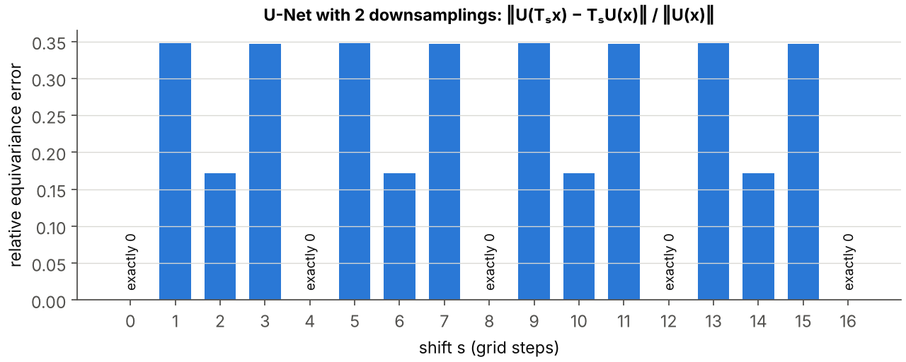
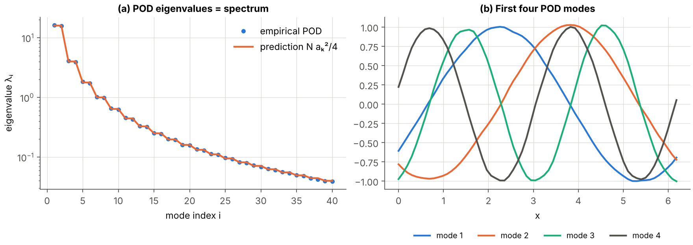
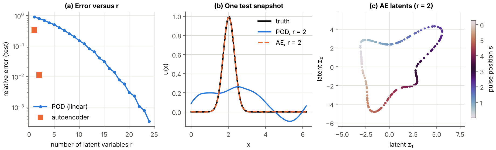

Deep learning for physics
Preparation · level L3 → M2 · ≈ 30 h
Objectives
This module provides the deep learning tools used by the internship’s generative models: the networks that parameterize a flow velocity field or a denoiser, the reduced representations in which generation takes place, and the mechanisms that impose a symmetry or a physical constraint. By the end of the planned thirty hours, you will be able to:
- write the empirical risk of a supervised problem, prove that the optimal predictor for the quadratic loss is the conditional expectation, and prove the linear convergence of gradient descent for a strongly convex and smooth function;
- derive backpropagation from the chain rule, program it by hand for a small network, and check the result with
torch.autogradand with finite differences, choosing the step size and the precision; - explain the role of initialization (He’s rule), of normalization (LayerNorm, GroupNorm), of residual connections and of FiLM conditioning, and state the universal approximation theorem while knowing what it does not say;
- prove that a circular convolution commutes with translations, explain why circular padding suits periodic domains and why a U-Net is equivariant only for certain translations;
- write scaled dot-product attention, prove the permutation equivariance of self-attention, and build a cross-attention functional decoder that can be evaluated at arbitrary points, as in FunDiff;
- compute a POD via the singular value decomposition, prove the Eckart–Young theorem, justify that the POD of a homogeneous field is the Fourier basis, and compare POD and autoencoder on an advected flow;
- write the ELBO of a variational autoencoder and the role of \beta, and describe observable-augmented autoencoders (Fukami and Taira, 2023) and the β-VAE + transformer pair (Solera-Rico et al., 2024);
- prove that symmetrization over a finite group makes a network equivariant, program a network whose output is the curl of a potential, and check numerically that its divergence is zero.
Prerequisites
The module starts from the level of the third year of a French bachelor’s degree (L3). You need to know how to differentiate a function of several variables, manipulate matrices (product, transpose, eigenvalues of a symmetric matrix), and know the basics of probability: expectation, variance, Gaussian distribution, independence. The singular value decomposition is recalled in chapter 5.
Two modules of the site should be read first: Vector calculus and Fourier analysis, for the discrete Fourier transform, the stream function and the vector potential, and Probability, statistics and optimal transport, for the conditional expectation and the Kullback–Leibler divergence. The module Fluid mechanics and turbulence sheds light on chapter 5 (energy spectrum, homogeneous turbulence) and the module Dynamical systems, bifurcations and invariant measures presents the Gissinger model used in chapter 6. Finally, the module Electromagnetism, MHD and the dynamo effect explains where the constraint \nabla\cdot\mathbf{B} = 0 that chapter 6 imposes by construction comes from.
On the programming side, you need to know Python and NumPy. PyTorch is introduced progressively: every code block on the page runs in less than 30 seconds on a single CPU core, without a graphics card.
This module directly prepares Generative models: diffusion and flow matching and Generative models under physical constraints.
Work plan
The level indicates the difficulty: 1 for the foundations, 2 for the core of the module, 3 for what already touches on the research questions of the internship. It never goes down from one session to the next.
| Session | Duration | Level | Content | Exercises |
|---|---|---|---|---|
| 1 | 3 h | 1 | Chapter 1, sections 1.1 and 1.2: supervised learning, empirical risk, gradient descent | 1 |
| 2 | 3 h | 1 | Chapter 1, sections 1.3 and 1.4: stochastic gradient, momentum, Adam, backpropagation | 2, 6, 7 |
| 3 | 4 h | 1 | Chapter 2: multilayer perceptrons, universal approximation, initialization, normalization | 8 |
| 4 | 4 h | 2 | Chapter 3: convolution, translation equivariance, circular padding, U-Net | 3, 9 |
| 5 | 3 h | 2 | Chapter 4: attention, transformers, cross-attention, ViT, Perceiver | 5, 10 |
| 6 | 4 h | 2 | Chapter 5, sections 5.1 to 5.4: POD, Eckart–Young, POD and Fourier, autoencoders | 11, 13, 14 |
| 7 | 3 h | 3 | Chapter 5, sections 5.5 to 5.7: VAE, β-VAE, augmented autoencoders, β-VAE + transformer | 4 |
| 8 | 4 h | 3 | Chapter 6: PINNs, neural operators, symmetrization, hard constraints by construction | 12, 15, 16 |
| 9 | 2 h | 3 | Chapter 7: PyTorch practice on CPU, double-precision gradient checking, rerunning all the code blocks | — |
| Total | 30 h | 7 chapters | 16 exercises |
Each session ends with the indicated exercises, to be attempted before reading their solution. The interactive diagrams on the page can be manipulated in the browser; the code blocks are meant to be copied, run, then modified.
1. Supervised learning and optimization
A generative model of MHD fields is, in the end, a neural network whose millions of parameters are adjusted by minimizing an average loss over data. This chapter sets up this framework: what is minimized (the empirical risk), how it is minimized (gradient descent, stochastic gradient, Adam), and how the gradient is computed efficiently (backpropagation).
1.1 The supervised learning framework
Definition 1.1 — Supervised learning, risk, empirical risk We are given n pairs (\mathbf{x}_i, \mathbf{y}_i) drawn independently from an unknown distribution P on \mathcal{X}\times\mathcal{Y}. A model is a family of functions f_\theta : \mathcal{X} \to \mathcal{Y} indexed by parameters \theta \in \mathbb{R}^p. A loss \ell(\hat{\mathbf{y}}, \mathbf{y}) \geq 0 measures the discrepancy between a prediction and the target. The risk is the average loss under the true distribution:
R(\theta) = \mathbb{E}_{(\mathbf{x}, \mathbf{y}) \sim P}\left[\ell(f_\theta(\mathbf{x}), \mathbf{y})\right].
Since P is unknown, one minimizes the empirical risk, the average over the sample:
\widehat{R}_n(\theta) = \frac{1}{n}\sum_{i=1}^{n} \ell(f_\theta(\mathbf{x}_i), \mathbf{y}_i).
For a regression, the usual loss is the quadratic loss \ell(\hat{\mathbf{y}}, \mathbf{y}) = |\hat{\mathbf{y}} - \mathbf{y}|^2; its empirical risk is called the mean squared error (MSE). For a classification into K classes, the network produces probabilities \hat p_1, \dots, \hat p_K and the cross-entropy loss equals -\log \hat p_{y}.
The gap R(\theta) - \widehat{R}_n(\theta) is called the generalization gap. A very rich model can make \widehat{R}_n almost zero by learning the noise in the sample: this is overfitting. It is detected by setting aside part of the data (validation set), which is never used to compute the gradient and on which the loss is measured as training proceeds.
Proposition 1.2 — Optimal predictor for the quadratic loss If \mathbb{E}|\mathbf{y}|^2 < \infty, the function f^\star(\mathbf{x}) = \mathbb{E}[\mathbf{y} \mid \mathbf{x}] minimizes the quadratic risk \mathbb{E}|f(\mathbf{x}) - \mathbf{y}|^2 among all square-integrable measurable functions f, and for any such f:
\mathbb{E}|f(\mathbf{x}) - \mathbf{y}|^2 = \mathbb{E}|\mathbf{y} - f^\star(\mathbf{x})|^2 + \mathbb{E}|f(\mathbf{x}) - f^\star(\mathbf{x})|^2.
Proof. Write f(\mathbf{x}) - \mathbf{y} = (f(\mathbf{x}) - f^\star(\mathbf{x})) + (f^\star(\mathbf{x}) - \mathbf{y}) and expand the square. The cross term equals 2\,\mathbb{E}[(f - f^\star)(\mathbf{x})\cdot(f^\star(\mathbf{x}) - \mathbf{y})]. Conditioning on \mathbf{x}, the first factor is known and \mathbb{E}[f^\star(\mathbf{x}) - \mathbf{y} \mid \mathbf{x}] = 0 by definition of f^\star; the cross term is therefore zero. The first remaining term does not depend on f and the second is nonnegative, zero for f = f^\star. ∎
Remark 1.3 — Why this result matters for the internship Flow matching (module p7) trains a network v_\theta(\mathbf{x}, t, \boldsymbol\lambda) by quadratic regression of a random target. Proposition 1.2 says that the optimum is the conditional expectation of this target: the learned velocity field is an average, and it is this average that transports the noise to the data. All the rest of this module is about parameterizing and training this regressor well.
Example 1.4 — Linear regression and normal equations For a linear model f_\theta(\mathbf{x}) = \theta^\top\mathbf{x} and a scalar target, the inputs are stored in the matrix X \in \mathbb{R}^{n\times p} (one row per example) and the targets in \mathbf{y} \in \mathbb{R}^n. The empirical risk (with a convenient factor \tfrac12) is \widehat R_n(\theta) = \frac{1}{2n}|X\theta - \mathbf{y}|^2, with gradient \nabla \widehat R_n(\theta) = \frac1n X^\top(X\theta - \mathbf{y}) and Hessian H = \frac1n X^\top X. The minimizer satisfies the normal equations X^\top X\,\theta = X^\top \mathbf{y}. With X = \begin{pmatrix} 1 & 0 \\ 1 & 1 \\ 1 & 2\end{pmatrix} and \mathbf{y} = (1, 2, 2)^\top, we find X^\top X = \begin{pmatrix} 3 & 3 \\ 3 & 5\end{pmatrix}, X^\top\mathbf{y} = (5, 6)^\top, hence \theta = (7/6, 1/2): the least-squares line is y = 7/6 + x/2.
1.2 Gradient descent
Definition 1.5 — Gradient descent, smoothness, strong convexity Gradient descent with step size \eta > 0 starts from \theta_0 and iterates
\theta_{k+1} = \theta_k - \eta\,\nabla \widehat R_n(\theta_k).
A differentiable function F is L-smooth if its gradient is L-Lipschitz: |\nabla F(\theta) - \nabla F(\theta')| \leq L|\theta - \theta'|. It is \mu-strongly convex (\mu > 0) if F(\theta') \geq F(\theta) + \nabla F(\theta)^\top(\theta' - \theta) + \frac{\mu}{2}|\theta' - \theta|^2 for all \theta, \theta'. The ratio \kappa = L/\mu \geq 1 is the condition number. For a quadratic form with Hessian H, L and \mu are the largest and the smallest eigenvalue of H.
A note on notation is in order here. In machine learning, the letter \eta traditionally denotes the step size, and that is its meaning throughout this module. In the rest of the site (see the common notations), \eta is the magnetic diffusivity; it appears here only in connection with experiment E2, where we always write “magnetic diffusivity \eta” in full.
Theorem 1.6 — Linear convergence of gradient descent Let F be an L-smooth and \mu-strongly convex function, with minimum F^\star. With step size \eta = 1/L, for all k \geq 0:
F(\theta_k) - F^\star \leq \left(1 - \frac{1}{\kappa}\right)^{k}\left(F(\theta_0) - F^\star\right).
Proof. Descent lemma. Smoothness gives, by integrating the gradient along the segment, F(\theta') \leq F(\theta) + \nabla F(\theta)^\top(\theta' - \theta) + \frac{L}{2}|\theta' - \theta|^2. With \theta' = \theta - \frac1L\nabla F(\theta), we get
F(\theta_{k+1}) \leq F(\theta_k) - \frac{1}{2L}|\nabla F(\theta_k)|^2.
Polyak–Łojasiewicz inequality. The right-hand side of strong convexity, seen as a function of \theta', is minimal at \theta' = \theta - \frac1\mu\nabla F(\theta), where it equals F(\theta) - \frac{1}{2\mu}|\nabla F(\theta)|^2. Since F(\theta') \geq F^\star for all \theta', we obtain F^\star \geq F(\theta) - \frac{1}{2\mu}|\nabla F(\theta)|^2, that is |\nabla F(\theta)|^2 \geq 2\mu\,(F(\theta) - F^\star).
Conclusion. Combining the two inequalities, F(\theta_{k+1}) - F^\star \leq F(\theta_k) - F^\star - \frac{\mu}{L}(F(\theta_k) - F^\star) = (1 - 1/\kappa)(F(\theta_k) - F^\star), and an induction concludes. ∎
Example 1.7 — The cost of poor conditioning To divide the excess risk by 10^6, one needs (1 - 1/\kappa)^k \leq 10^{-6}, i.e. about k \geq \kappa \ln(10^6) \approx 13.8\,\kappa iterations. With \kappa = 100, this means about 1,400 iterations; with \kappa = 10^4, about 140,000. In practice, the losses of deep networks are poorly conditioned, which motivates momentum and Adam. The code block of section 1.3 revisits a linear regression with condition number \kappa \approx 100. After 300 steps of size 1/L, the theorem only guarantees a division of the excess risk by (1 - 1/\kappa)^{-300} \approx e^{300/\kappa} \approx 18 (with the measured value \kappa = 104). One observes much better (the excess goes from 1.9 to 3.3\times 10^{-6}), because most of the initial excess is carried by the steep directions, which converge quickly. The bound describes the worst case, in which all the excess would be carried by the flattest direction; it is the remaining component along this direction that limits the final accuracy.
1.3 Stochastic gradient, momentum and Adam
Computing \nabla\widehat R_n requires going through all n examples. When n is hundreds of thousands of field snapshots, one instead estimates the gradient on a small randomly drawn batch (mini-batch).
Proposition 1.8 — The stochastic gradient is unbiased Let B = (i_1, \dots, i_b) be a batch of b indices drawn uniformly and independently from \{1, \dots, n\}, and \mathbf{g} = \frac1b\sum_{j=1}^{b}\nabla \ell_{i_j}(\theta), where \ell_i(\theta) = \ell(f_\theta(\mathbf{x}_i), \mathbf{y}_i). Then
\mathbb{E}[\mathbf{g}] = \nabla\widehat R_n(\theta), \qquad \mathbb{E}\left|\mathbf{g} - \nabla\widehat R_n(\theta)\right|^2 = \frac{\sigma^2(\theta)}{b},
where \sigma^2(\theta) = \frac1n\sum_{i=1}^n |\nabla\ell_i(\theta) - \nabla\widehat R_n(\theta)|^2 is the spread of the individual gradients.
Proof. Each term \nabla\ell_{i_j} has expectation \frac1n\sum_i \nabla\ell_i = \nabla\widehat R_n, hence the first equality by linearity. The b centered terms \nabla\ell_{i_j} - \nabla\widehat R_n are independent, with zero mean and variance \sigma^2; the variance of an average of b such terms is \sigma^2/b. ∎
Stochastic gradient descent (SGD) replaces \nabla\widehat R_n by \mathbf{g} in definition 1.5. With a constant step size, the noise of variance \sigma^2/b prevents exact convergence: the iterates fluctuate in a region whose size decreases with \eta. Robbins and Monro (1951) showed that decreasing step sizes satisfying \sum_k \eta_k = \infty and \sum_k \eta_k^2 < \infty ensure convergence under suitable assumptions; in deep learning, one rather uses a step size that decreases according to a schedule (cosine, steps).
Definition 1.9 — Momentum and Adam Momentum (or heavy ball) accumulates an average of past gradients: \mathbf{m}_{k} = \beta\,\mathbf{m}_{k-1} + \mathbf{g}_k then \theta_{k} = \theta_{k-1} - \eta\,\mathbf{m}_k, typically with \beta = 0.9.
Adam (Kingma and Ba, 2015) keeps, component by component, a moving average of the gradient and of its square, then corrects their initial bias:
\mathbf{m}_k = \beta_1\mathbf{m}_{k-1} + (1 - \beta_1)\,\mathbf{g}_k, \qquad \mathbf{v}_k = \beta_2\mathbf{v}_{k-1} + (1 - \beta_2)\,\mathbf{g}_k\odot\mathbf{g}_k,
\hat{\mathbf{m}}_k = \frac{\mathbf{m}_k}{1 - \beta_1^k}, \qquad \hat{\mathbf{v}}_k = \frac{\mathbf{v}_k}{1 - \beta_2^k}, \qquad \theta_k = \theta_{k-1} - \eta\,\frac{\hat{\mathbf{m}}_k}{\sqrt{\hat{\mathbf{v}}_k} + \varepsilon},
with \mathbf{m}_0 = \mathbf{v}_0 = 0, \odot the componentwise product and the default values \beta_1 = 0.9, \beta_2 = 0.999, \varepsilon = 10^{-8}. AdamW (Loshchilov and Hutter, 2019) adds a decoupled weight decay: \theta_k \leftarrow \theta_k - \eta\,\lambda_{\mathrm{wd}}\,\theta_{k-1}.
Proposition 1.10 — Two properties of Adam (i) If the gradient is constant, \mathbf{g}_k = \mathbf{g}, then \hat{\mathbf{m}}_k = \mathbf{g} and \hat{\mathbf{v}}_k = \mathbf{g}\odot\mathbf{g} for all k \geq 1.
- For \varepsilon = 0, Adam’s step is unchanged if the j-th component of all the gradients is multiplied by a constant c_j > 0: the step size is set by \eta, not by the scale of the gradient.
Proof.
By induction, \mathbf{m}_k = (1 - \beta_1)\sum_{j=1}^{k}\beta_1^{k-j}\mathbf{g} = (1 - \beta_1^k)\,\mathbf{g}, and similarly \mathbf{v}_k = (1 - \beta_2^k)\,\mathbf{g}\odot\mathbf{g}; dividing by 1 - \beta^k removes exactly this factor. Without the correction, the first steps would be much too small because \mathbf{m}_0 = 0.
The recursions are linear: m_{k,j} is multiplied by c_j and v_{k,j} by c_j^2, so the quotient \hat m_{k,j}/\sqrt{\hat v_{k,j}} is unchanged. ∎
Kingma and Ba (2015, section 2.1) bound the size of the effective step \Delta_k = \eta\,\hat m_k/\sqrt{\hat v_k} (for \varepsilon = 0): |\Delta_k| \leq \eta when 1 - \beta_1 \leq \sqrt{1 - \beta_2}, and |\Delta_k| \leq \eta(1 - \beta_1)/\sqrt{1 - \beta_2} otherwise. With the default values, we are in the second case (0.1 > \sqrt{0.001} \approx 0.032, bound \approx 3.2\,\eta), but the authors point out that this bound is approached only for extremely sparse gradients, zero at every step except the last one; in usual cases, |\hat m_k/\sqrt{\hat v_k}| remains of order 1 at most, and the step of order \eta. Property (ii) partly explains Adam’s robustness on poorly conditioned losses whose eigendirections are aligned with the parameter axes: it equalizes the scales component by component. It does not help when the valley is oblique, as the interactive diagram below shows (“rotated valley” checkbox).
The following block compares these optimizers on a linear regression whose Hessian has a condition number close to 100.
import torch
torch.set_num_threads(1)
torch.manual_seed(0)
# Poorly conditioned linear regression: columns with standard deviations from 1 to 0.1
n, d = 2000, 20
X = torch.randn(n, d) * torch.logspace(0, -1, d)
y = X @ torch.randn(d) + 0.01 * torch.randn(n)
def risk(theta):
return 0.5 * ((X @ theta - y) ** 2).mean()
R_star = risk(torch.linalg.lstsq(X, y).solution).item() # exact minimum (normal equations)
ev = torch.linalg.eigvalsh(X.T @ X / n) # Hessian of the empirical risk
L = ev[-1].item()
print(f"kappa = L/mu = {(ev[-1] / ev[0]).item():.0f}")
def run(label, make_opt, steps=300, batch=None):
torch.manual_seed(1)
theta = torch.zeros(d, requires_grad=True)
opt = make_opt([theta])
for k in range(steps):
idx = torch.randint(0, n, (batch,)) if batch else slice(None)
loss = 0.5 * ((X[idx] @ theta - y[idx]) ** 2).mean()
opt.zero_grad(); loss.backward(); opt.step()
print(f"{label:<26} excess risk: {risk(theta.detach()).item() - R_star:.1e}")
run("GD, eta = 1/L", lambda p: torch.optim.SGD(p, lr=1 / L))
run("GD + momentum 0.9", lambda p: torch.optim.SGD(p, lr=1 / L, momentum=0.9))
run("Adam, eta = 0.05", lambda p: torch.optim.Adam(p, lr=0.05))
run("SGD batch 32, eta = 1/L", lambda p: torch.optim.SGD(p, lr=1 / L), batch=32)
run("SGD batch 32, eta = 0.1/L", lambda p: torch.optim.SGD(p, lr=0.1 / L), batch=32, steps=3000)
run("Adam batch 32, eta = 0.05", lambda p: torch.optim.Adam(p, lr=0.05), batch=32)
# output:
# kappa = L/mu = 104
# GD, eta = 1/L excess risk: 3.3e-06
# GD + momentum 0.9 excess risk: 2.9e-11
# Adam, eta = 0.05 excess risk: 1.8e-11
# SGD batch 32, eta = 1/L excess risk: 1.9e-05
# SGD batch 32, eta = 0.1/L excess risk: 3.6e-06
# Adam batch 32, eta = 0.05 excess risk: 1.7e-06Three observations can be read from this output. Plain gradient descent is slow, as predicted by theorem 1.6 with \kappa \approx 100. Momentum and Adam gain five orders of magnitude for the same number of steps. With batches of 32 examples, the loss stagnates at a floor set by the gradient noise: dividing the step size by 10 lowers this floor, at the cost of ten times as many steps.
1.4 Backpropagation
A neural network is a composition of simple functions. Its gradient with respect to millions of parameters can be computed at a cost comparable to that of a single evaluation of the network: this is backpropagation, a special case of reverse-mode automatic differentiation (Rumelhart, Hinton and Williams, 1986).
Definition 1.11 — Layered network and adjoints Consider a composition \mathbf{h}_0 = \mathbf{x}, \mathbf{h}_\ell = f_\ell(\mathbf{h}_{\ell-1}; \theta_\ell) for \ell = 1, \dots, L, followed by a scalar loss J = \varphi(\mathbf{h}_L) (we denote the loss by \varphi, so as not to confuse it with the layer index \ell). We write A_\ell = \partial f_\ell/\partial\mathbf{h}_{\ell-1} and B_\ell = \partial f_\ell/\partial\theta_\ell for the Jacobian matrices of layer \ell, evaluated at the current point. The adjoint of layer \ell is the vector \boldsymbol\delta_\ell = \partial J/\partial\mathbf{h}_\ell, of the same size as \mathbf{h}_\ell.
Theorem 1.12 — Backpropagation The adjoints satisfy the backward recursion
\boldsymbol\delta_L = \nabla\varphi(\mathbf{h}_L), \qquad \boldsymbol\delta_{\ell-1} = A_\ell^\top\,\boldsymbol\delta_\ell \quad (\ell = L, \dots, 1),
and the gradient with respect to the parameters of layer \ell is \nabla_{\theta_\ell} J = B_\ell^\top\,\boldsymbol\delta_\ell. Computing all the gradients costs one forward pass (which stores the \mathbf{h}_\ell) and one backward pass, i.e. a small multiple of the cost of one evaluation.
Proof. Differentiate the composition. The chain rule gives \mathrm{d}J = \nabla\varphi(\mathbf{h}_L)^\top\mathrm{d}\mathbf{h}_L and, for each layer, \mathrm{d}\mathbf{h}_\ell = A_\ell\,\mathrm{d}\mathbf{h}_{\ell-1} + B_\ell\,\mathrm{d}\theta_\ell, with \mathrm{d}\mathbf{h}_0 = 0 since the input is fixed. Unrolling this recursion,
\mathrm{d}\mathbf{h}_L = \sum_{\ell=1}^{L} A_L A_{L-1}\cdots A_{\ell+1}\,B_\ell\,\mathrm{d}\theta_\ell,
so \mathrm{d}J = \sum_\ell \mathbf{p}_\ell^\top B_\ell\,\mathrm{d}\theta_\ell with \mathbf{p}_\ell^\top = \nabla\varphi(\mathbf{h}_L)^\top A_L\cdots A_{\ell+1}, which gives \partial J/\partial\theta_\ell = B_\ell^\top\mathbf{p}_\ell. The same unrolling, started at layer \ell, shows that a variation of \mathbf{h}_\ell alone produces \mathrm{d}\mathbf{h}_L = A_L\cdots A_{\ell+1}\,\mathrm{d}\mathbf{h}_\ell, hence \mathrm{d}J = \mathbf{p}_\ell^\top\mathrm{d}\mathbf{h}_\ell: the vector \mathbf{p}_\ell is exactly the adjoint \boldsymbol\delta_\ell = \partial J/\partial\mathbf{h}_\ell. Finally, \mathbf{p}_L = \nabla\varphi(\mathbf{h}_L) and \mathbf{p}_{\ell-1}^\top = \mathbf{p}_\ell^\top A_\ell, which is the stated recursion.
For the cost, the product \nabla\varphi^\top A_L\cdots A_{\ell+1} is evaluated from left to right: each step is a vector–matrix product, as expensive as applying the layer. Forward mode, which would propagate \partial\mathbf{h}_\ell/\partial\theta from right to left, would require one pass per parameter. ∎
Proposition 1.13 — Formulas for a dense layer For the layer \mathbf{a}_\ell = W_\ell\mathbf{h}_{\ell-1} + \mathbf{b}_\ell, \mathbf{h}_\ell = \sigma(\mathbf{a}_\ell) with \sigma applied componentwise, set \boldsymbol\delta^{a}_\ell = \sigma'(\mathbf{a}_\ell)\odot\boldsymbol\delta_\ell. Then
\nabla_{W_\ell}J = \boldsymbol\delta^{a}_\ell\,\mathbf{h}_{\ell-1}^\top, \qquad \nabla_{\mathbf{b}_\ell}J = \boldsymbol\delta^{a}_\ell, \qquad \boldsymbol\delta_{\ell-1} = W_\ell^\top\boldsymbol\delta^{a}_\ell.
Proof. Apply theorem 1.12 to the layer split in two: the activation has Jacobian \mathrm{diag}(\sigma'(\mathbf{a}_\ell)), hence \boldsymbol\delta^a_\ell. For the affine part, \partial a_i/\partial W_{ij} = h_j and \partial a_i/\partial b_i = 1, so \partial J/\partial W_{ij} = \delta^a_i h_j and \partial J/\partial b_i = \delta^a_i; finally \partial\mathbf{a}_\ell/\partial\mathbf{h}_{\ell-1} = W_\ell gives the last formula. ∎
Example 1.14 — Backpropagation by hand Take x = 1, h = \tanh(w_1 x), \hat y = w_2 h, J = \frac12(\hat y - y)^2 with w_1 = 0.5, w_2 = -1, y = 0. Forward pass: h = \tanh(0.5) = 0.46212, \hat y = -0.46212, J = 0.10678. Backward pass: \delta_{\hat y} = \hat y - y = -0.46212, so \partial J/\partial w_2 = \delta_{\hat y}\,h = -0.21355; then \delta_h = w_2\,\delta_{\hat y} = 0.46212 and \delta_a = (1 - h^2)\,\delta_h = 0.78644 \times 0.46212 = 0.36343, so \partial J/\partial w_1 = \delta_a\,x = 0.36343.
The following code programs backpropagation for a network with one hidden layer, then checks it in two ways: with PyTorch’s automatic differentiation, and with centered finite differences.
import numpy as np
import torch
torch.set_num_threads(1)
rng = np.random.default_rng(0)
# Network with one hidden layer: a = W1 x + b1, h = tanh(a), y_hat = W2 h + b2, J = 1/2 |y_hat - y|^2
d, n, m = 3, 5, 2
W1, b1 = rng.normal(size=(n, d)), rng.normal(size=n)
W2, b2 = rng.normal(size=(m, n)), rng.normal(size=m)
x, y = rng.normal(size=d), rng.normal(size=m)
# Forward pass (the intermediate values are kept)
a = W1 @ x + b1
h = np.tanh(a)
y_hat = W2 @ h + b2
J = 0.5 * np.sum((y_hat - y) ** 2)
# Backward pass (backpropagation written by hand)
delta_y = y_hat - y # dJ/dy_hat
gW2 = np.outer(delta_y, h) # dJ/dW2
gb2 = delta_y
delta_h = W2.T @ delta_y # dJ/dh
delta_a = (1 - h ** 2) * delta_h # tanh'(a) = 1 - tanh(a)^2
gW1 = np.outer(delta_a, x)
gb1 = delta_a
# Check 1: PyTorch automatic differentiation
T = lambda A: torch.tensor(A, dtype=torch.float64, requires_grad=True)
tW1, tb1, tW2, tb2 = T(W1), T(b1), T(W2), T(b2)
tJ = 0.5 * ((tW2 @ torch.tanh(tW1 @ torch.tensor(x) + tb1) + tb2 - torch.tensor(y)) ** 2).sum()
tJ.backward()
print("hand/autograd gap:", max(np.abs(gW1 - tW1.grad.numpy()).max(), np.abs(gW2 - tW2.grad.numpy()).max()))
# Check 2: centered finite differences on one coefficient of W1
def loss(W1_):
return 0.5 * np.sum((W2 @ np.tanh(W1_ @ x + b1) + b2 - y) ** 2)
eps, E = 1e-6, np.zeros_like(W1); E[1, 2] = 1.0
fd = (loss(W1 + eps * E) - loss(W1 - eps * E)) / (2 * eps)
print(f"dJ/dW1[1,2]: backpropagation {gW1[1, 2]:.8f}, finite differences {fd:.8f}")
# Scalar example from the text: x = 1, w1 = 0.5, w2 = -1, y = 0
w1 = torch.tensor(0.5, requires_grad=True); w2 = torch.tensor(-1.0, requires_grad=True)
Js = 0.5 * (w2 * torch.tanh(w1 * 1.0) - 0.0) ** 2
Js.backward()
print(f"J = {Js.item():.5f}, dJ/dw1 = {w1.grad.item():.5f}, dJ/dw2 = {w2.grad.item():.5f}")
# output:
# hand/autograd gap: 3.3306690738754696e-16
# dJ/dW1[1,2]: backpropagation -0.31433281, finite differences -0.31433281
# J = 0.10678, dJ/dw1 = 0.36343, dJ/dw2 = -0.21355Key takeaways — chapter 1
- One minimizes the empirical risk \widehat R_n(\theta) = \frac1n\sum_i \ell(f_\theta(\mathbf{x}_i), \mathbf{y}_i) and monitors a validation loss to detect overfitting.
- For the quadratic loss, the optimum is the conditional expectation \mathbb{E}[\mathbf{y}\mid\mathbf{x}]; flow matching exploits exactly this fact.
- Gradient descent converges like (1 - 1/\kappa)^k: the condition number \kappa sets the speed. Momentum and Adam mitigate this problem; the stochastic gradient is unbiased, with variance \sigma^2/b.
- Backpropagation is the chain rule evaluated from the output to the input: \boldsymbol\delta_{\ell-1} = A_\ell^\top\boldsymbol\delta_\ell, \nabla_{\theta_\ell}J = B_\ell^\top\boldsymbol\delta_\ell, at the cost of about two evaluations of the network.
- Always check a hand-written gradient with centered finite differences (in double precision).
2. Multilayer perceptrons
The multilayer perceptron (MLP) is the basic building block: in experiments E1 and E2 of this repository, it is what parameterizes the flow matching velocity field. This chapter specifies what an MLP can represent, then the practical details without which it does not train: initialization, normalization, residual connections, conditioning on a physical parameter.
2.1 Definition
Definition 2.1 — Multilayer perceptron An MLP with L layers of widths n_0, n_1, \dots, n_L is the function
f_\theta(\mathbf{x}) = W_L\,\sigma\big(W_{L-1}\,\sigma(\cdots\sigma(W_1\mathbf{x} + \mathbf{b}_1)\cdots) + \mathbf{b}_{L-1}\big) + \mathbf{b}_L,
where W_\ell \in \mathbb{R}^{n_\ell\times n_{\ell-1}}, \mathbf{b}_\ell \in \mathbb{R}^{n_\ell} and \sigma is an activation applied componentwise. Common activations are \mathrm{ReLU}(z) = \max(z, 0), \tanh, \mathrm{SiLU}(z) = z/(1 + e^{-z}) and \mathrm{GELU}(z) = z\,\Phi(z), where \Phi is the cumulative distribution function of the normal distribution. The number of parameters is \sum_{\ell=1}^{L}(n_{\ell-1} + 1)\,n_\ell.
Example 2.2 — Size of an MLP The MLP of the repository’s experiments (MLPField in experiences/common.py) takes the state and a sinusoidal embedding of the time and of the parameter, and has four hidden layers, of width 256 in experiment E1 (1,024 in E2). For a state of dimension 3 (Gissinger model) and embeddings of size 2 \times 33 = 66, the input has 69 components; the number of parameters is (69 + 1)\times 256 + 3\times(256 + 1)\times 256 + (256 + 1)\times 3 = 17\,920 + 197\,376 + 771 = 216\,067.
2.2 Universal approximation
Theorem 2.3 — Universal approximation (Cybenko, 1989; Hornik, 1991; Leshno et al., 1993) Let \sigma : \mathbb{R}\to\mathbb{R} be continuous and non-polynomial, K \subset \mathbb{R}^d a compact set and f : K \to \mathbb{R} continuous. For every \varepsilon > 0, there exist N and coefficients a_j, b_j \in \mathbb{R}, \mathbf{w}_j \in \mathbb{R}^d such that
\sup_{\mathbf{x}\in K}\left|f(\mathbf{x}) - \sum_{j=1}^{N} a_j\,\sigma(\mathbf{w}_j^\top\mathbf{x} + b_j)\right| < \varepsilon.
Proof. Proof in the case d = 1, \sigma = \mathrm{ReLU}, K = [a, b]. Split [a, b] into N intervals of length h = (b - a)/N at the nodes x_j = a + jh, and let p be the piecewise affine interpolant of f at the nodes, with slope s_j on [x_j, x_{j+1}]. On [a, b], we have x - a = \mathrm{ReLU}(x - x_0) and
p(x) = f(x_0) + s_0\,\mathrm{ReLU}(x - x_0) + \sum_{j=1}^{N-1}(s_j - s_{j-1})\,\mathrm{ReLU}(x - x_j),
because each term \mathrm{ReLU}(x - x_j) changes the slope by s_j - s_{j-1} exactly at the node x_j. The constant f(x_0) can itself be written f(x_0)\,\mathrm{ReLU}(0\cdot x + 1): p is therefore a network with one hidden layer of N + 1 neurons. Let \omega(h) = \sup_{|x - x'|\leq h}|f(x) - f(x')| be the modulus of continuity of f. For x \in [x_j, x_{j+1}], p(x) lies between f(x_j) and f(x_{j+1}), so |f(x) - p(x)| \leq |f(x) - f(x_j)| + |f(x_j) - p(x)| \leq 2\,\omega(h). Since f is uniformly continuous on the compact set, \omega(h) \to 0 as N \to \infty. The general case (arbitrary d, non-polynomial \sigma) is proved by Leshno et al. (1993) and is not reproduced here. ∎
Remark 2.4 — What the theorem does not say The theorem guarantees the existence of a network, without any reasonable bound on its number of neurons (which can grow exponentially with d), without saying whether gradient descent will find it, or whether it will generalize. In practice, networks first learn the low frequencies of the target: this is the spectral bias (Rahaman et al., 2019). To represent turbulent fields rich in small scales, the coordinates are embedded into Fourier features (Tancik et al., 2020).
Definition 2.5 — Fourier features For a coordinate \mathbf{x}\in\mathbb{R}^d and a frequency matrix \mathbf{B} \in \mathbb{R}^{m\times d}, the Fourier embedding is
\gamma(\mathbf{x}) = \big(\cos(2\pi\mathbf{B}\mathbf{x}),\ \sin(2\pi\mathbf{B}\mathbf{x})\big) \in \mathbb{R}^{2m}.
The frequencies are drawn at random (B_{ij}\sim\mathcal{N}(0, s^2), Tancik et al., 2020) or chosen as integers for a periodic domain.
Proposition 2.6 — Periodicity imposed by construction On the domain [0, 2\pi)^2, let \gamma(x, y) = (\cos x, \sin x, \cos y, \sin y). For any network g, the function f = g\circ\gamma is 2\pi-periodic in x and in y, and so are all its derivatives.
Proof. We have \gamma(x + 2\pi, y) = \gamma(x, y), so f(x + 2\pi, y) = f(x, y); likewise in y. The derivatives of a differentiable periodic function are periodic. ∎
This is the embedding used by FunDiff (Wang et al., 2026) to impose the periodicity of the Kolmogorov flow: a “hard” constraint, satisfied exactly whatever the weights. The following block illustrates the spectral bias on the target \sin(2\pi x) + \frac12\sin(16\pi x): without an embedding, the frequency-8 component is barely learned after 300 steps.
import math
import torch
torch.set_num_threads(1)
torch.manual_seed(0)
x = (torch.arange(256) / 256)[:, None] # periodic grid of [0, 1)
f = torch.sin(2 * math.pi * x) + 0.5 * torch.sin(2 * math.pi * 8 * x) # low + high frequency
def mlp(d_in):
return torch.nn.Sequential(torch.nn.Linear(d_in, 64), torch.nn.Tanh(),
torch.nn.Linear(64, 64), torch.nn.Tanh(), torch.nn.Linear(64, 1))
B = 6.0 * torch.randn(1, 32) # random frequencies (Tancik et al. 2020)
embeddings = {"raw x": lambda x: x,
"Fourier features": lambda x: torch.cat([torch.cos(2 * math.pi * x @ B), torch.sin(2 * math.pi * x @ B)], 1)}
for name, emb in embeddings.items():
net = mlp(emb(x).shape[1])
opt = torch.optim.Adam(net.parameters(), lr=1e-3)
for step in range(1, 3001):
loss = ((net(emb(x)) - f) ** 2).mean()
opt.zero_grad(); loss.backward(); opt.step()
if step in (300, 3000):
r = (net(emb(x)) - f).detach().squeeze()
c = torch.fft.rfft(r) / 128 # error amplitude per frequency
print(f"{name:<17} step {step:>4}: rel. error {r.norm() / f.norm():.1e}, "
f"|error| at k=1: {c[1].abs():.1e}, at k=8: {c[8].abs():.1e}")
# output:
# raw x step 300: rel. error 5.8e-01, |error| at k=1: 2.4e-01, at k=8: 4.3e-01
# raw x step 3000: rel. error 8.7e-02, |error| at k=1: 1.2e-03, at k=8: 2.3e-02
# Fourier features step 300: rel. error 3.4e-03, |error| at k=1: 1.6e-05, at k=8: 8.5e-06
# Fourier features step 3000: rel. error 4.1e-04, |error| at k=1: 3.5e-07, at k=8: 4.2e-07At 300 steps, the network without an embedding has already reduced the error on frequency 1 (amplitude 1) to 0.24, but the error on frequency 8 is still 0.43 for an amplitude of 0.5: this component is barely learned.
2.3 Initialization
If the initial weights are too small, the signal dies out from layer to layer; if they are too large, it explodes. The right scale can be computed.
Proposition 2.7 — Variance propagation and He’s rule Consider the layer \mathbf{a}^{(\ell)} = W^{(\ell)}\mathbf{h}^{(\ell-1)} with \mathbf{h}^{(\ell-1)} = \mathrm{ReLU}(\mathbf{a}^{(\ell-1)}), weights W^{(\ell)}_{ij} that are independent, centered, of variance s^2, independent of \mathbf{h}^{(\ell-1)}, and pre-activations a^{(\ell-1)}_j with a symmetric distribution (hence centered) and the same variance for all j. Then
\mathrm{Var}\big(a^{(\ell)}_i\big) = \frac{n_{\ell-1}\,s^2}{2}\,\mathrm{Var}\big(a^{(\ell-1)}_j\big).
The variance is therefore preserved from layer to layer if and only if s^2 = 2/n_{\ell-1} (He et al., 2015). For a linear activation or \tanh near 0, the same computation without the factor \frac12 gives s^2 = 1/n_{\ell-1}; Glorot and Bengio (2010) propose the compromise s^2 = 2/(n_{\ell-1} + n_\ell) between forward and backward passes.
Proof. a^{(\ell)}_i = \sum_j W_{ij}h_j is a sum of n_{\ell-1} centered terms (since \mathbb{E}W_{ij} = 0 and W is independent of \mathbf{h}), pairwise uncorrelated, of variance \mathbb{E}[W_{ij}^2]\,\mathbb{E}[h_j^2] = s^2\,\mathbb{E}[h_j^2]. If a = a^{(\ell-1)}_j is symmetric, \mathbb{E}[\mathrm{ReLU}(a)^2] = \mathbb{E}[a^2\mathbf{1}_{a>0}] = \frac12\mathbb{E}[a^2] = \frac12\mathrm{Var}(a). Summing, \mathrm{Var}(a^{(\ell)}_i) = n_{\ell-1}s^2\cdot\frac12\mathrm{Var}(a). ∎
Example 2.8 — Twenty layers With s^2 = 1/n and ReLUs, the variance is halved at each layer: after 20 layers, the standard deviation is multiplied by 2^{-19/2} \approx 1.4\times 10^{-3} relative to the first layer. The block below measures it (1.22\times 10^{-3}) and shows that with s^2 = 2/n the standard deviation remains of order 1, whereas with s^2 = 3/n it is multiplied by 1.5^{1/2} at each layer and exceeds 100 at the twentieth.
import torch
torch.set_num_threads(1)
torch.manual_seed(0)
n, depth = 256, 20
x = torch.randn(1000, n) # 1000 inputs, components of variance 1
def forward_std(var_w):
"""Standard deviation of the pre-activations layer by layer, weights N(0, var_w / n)."""
h, out = x, []
for _ in range(depth):
W = torch.randn(n, n) * (var_w / n) ** 0.5
a = h @ W.T
out.append(a.std().item())
h = torch.relu(a)
return out
for name, v in [("s^2 = 1/n", 1.0), ("He: s^2 = 2/n", 2.0), ("s^2 = 3/n", 3.0)]:
s = forward_std(v)
print(f"{name:<15} std layer 1: {s[0]:.2f}, layer 10: {s[9]:.2e}, layer 20: {s[19]:.2e}")
# Invariance of LayerNorm (without parameters) under h -> 3 h + 5
ln = torch.nn.LayerNorm(n, elementwise_affine=False, eps=0.0)
h = torch.randn(4, n)
print("gap LN(3h+5) - LN(h):", (ln(3 * h + 5) - ln(h)).abs().max().item())
# output:
# s^2 = 1/n std layer 1: 1.00, layer 10: 3.87e-02, layer 20: 1.22e-03
# He: s^2 = 2/n std layer 1: 1.42, layer 10: 1.29e+00, layer 20: 1.70e+00
# s^2 = 3/n std layer 1: 1.72, layer 10: 1.22e+01, layer 20: 1.13e+02
# gap LN(3h+5) - LN(h): 4.76837158203125e-072.4 Normalization, residual connections and conditioning
Definition 2.9 — Normalizations A normalization layer centers and rescales activations, then applies a learned affine transformation (\boldsymbol\gamma, \boldsymbol\beta):
\mathrm{Norm}(\mathbf{h}) = \boldsymbol\gamma\odot\frac{\mathbf{h} - m}{\sqrt{v + \varepsilon}} + \boldsymbol\beta.
They differ in the set over which the mean m and the variance v are computed. BatchNorm (Ioffe and Szegedy, 2015) averages each channel over the batch; LayerNorm (Ba et al., 2016) averages over the components of a single example; GroupNorm (Wu and He, 2018) averages, for each example, over groups of channels and over space.
Proposition 2.10 — Invariance of LayerNorm For \varepsilon = 0, a > 0 and c \in \mathbb{R}, we have \mathrm{LN}(a\mathbf{h} + c\mathbf{1}) = \mathrm{LN}(\mathbf{h}).
Proof. The mean of a\mathbf{h} + c\mathbf{1} is a\,m + c and its variance a^2 v; the quotient (a\mathbf{h} + c - a\,m - c)/\sqrt{a^2 v} equals (\mathbf{h} - m)/\sqrt{v}. ∎
BatchNorm makes the output for one example depend on the other examples in the batch, which is a problem with small batches and in generation. Diffusion and flow matching models rather use GroupNorm (in U-Nets) or LayerNorm (in transformers).
Definition 2.11 — Residual connection and FiLM conditioning A residual block computes \mathbf{h} \mapsto \mathbf{h} + F(\mathbf{h}) (He et al., 2016): at initialization, if F is small, the block is close to the identity, and the gradient passes through the layers without being attenuated. FiLM conditioning (Perez et al., 2018) injects external information \mathbf{c} (flow time, physical parameter \boldsymbol\lambda) through an affine modulation of the channels:
\mathbf{h} \mapsto \big(1 + \mathbf{s}(\mathbf{c})\big)\odot\mathbf{h} + \mathbf{t}(\mathbf{c}),
where \mathbf{s} and \mathbf{t} are small networks.
Remark 2.12 — In the repository The small U-Net in experiences/unet.py combines these three ingredients: residual blocks, GroupNorm with 8 groups, and FiLM modulation by a sinusoidal embedding of the time t and of the physical parameter. This is the standard form of a conditional network for generating parametric fields. To be precise about what is measured in the repository: this U-Net is provided there, but the reported results of experiments E1 and E2 use the MLP MLPField, because E2 generates Fourier coefficients and not fields on a grid (section 5.2).
Key takeaways — chapter 2
- An MLP alternates affine layers and activations; it approximates any continuous function on a compact set, but the theorem says nothing about the required size, about training or about generalization.
- Networks learn the low frequencies first; Fourier features correct this bias and impose periodicity by construction.
- He initialization: weights of variance 2/n_{\mathrm{entrée}} for ReLUs, so that the variance of the signal neither dies out nor explodes.
- LayerNorm and GroupNorm normalize each example separately; residual blocks and FiLM enable deep networks conditioned on t and \boldsymbol\lambda.
3. Convolutional networks
A velocity field on a 64\times 64 grid has 8,192 components. An MLP that treats it as a vector ignores the fact that the physics is the same at every point of the box: a translated vortical structure must be treated in the same way. Convolutions incorporate this symmetry by construction and reduce the number of parameters by several orders of magnitude.
3.1 Discrete convolution
Definition 3.1 — Circular convolution, translation On a periodic grid with N points (indices modulo N), the translation by s steps is (T_s x)[i] = x[i - s]. A convolutional layer with C input channels and C' output channels, with a kernel of radius r, computes
y_{c'}[i] = b_{c'} + \sum_{c=1}^{C}\sum_{j=-r}^{r} K[c', c, j]\;x_c[i + j],
the indices being taken modulo N (circular padding). In deep learning, this operation (a cross-correlation) is called a convolution by abuse of language. The number of parameters, C'C(2r + 1) + C', does not depend on N. In 2D, the kernel is a (2r+1)\times(2r+1) square and the indices are pairs.
Example 3.2 — The discrete Laplacian is a convolution With one channel, r = 1 and the kernel K = (1, -2, 1)/h^2, the layer computes (x[i-1] - 2x[i] + x[i+1])/h^2: this is the centered finite-difference Laplacian on a periodic grid with spacing h. For a 64\times 64 field with 2 components, a dense layer that returns a field of the same size has 8\,192^2 + 8\,192 \approx 6.7\times 10^7 parameters; a 3\times 3 convolution from 2 to 2 channels has 2\times 2\times 9 + 2 = 38.
3.2 Translation equivariance
Definition 3.3 — Equivariance, invariance A map \Phi is translation equivariant if \Phi(T_s x) = T_s\,\Phi(x) for all s and all x: translating the input translates the output. It is invariant if \Phi(T_s x) = \Phi(x).
Theorem 3.4 — Circular convolutions are equivariant A convolutional layer with circular padding commutes with all translations. The same holds for any composition of such layers and of pointwise activations. A final spatial average makes the composition invariant.
Proof. For one layer, setting k = i - s,
\big(K\star T_s x\big)_{c'}[i] = b_{c'} + \sum_{c, j}K[c', c, j]\,x_c[i + j - s] = \big(K\star x\big)_{c'}[i - s] = \big(T_s(K\star x)\big)_{c'}[i].
A pointwise activation satisfies \sigma(T_s x)[i] = \sigma(x[i - s]) = (T_s\sigma(x))[i]. If \Phi_1 and \Phi_2 commute with T_s, then \Phi_2(\Phi_1(T_s x)) = \Phi_2(T_s\Phi_1(x)) = T_s\Phi_2(\Phi_1(x)). Finally, the average \frac1N\sum_i y[i - s] does not depend on s. ∎
Proposition 3.5 — Converse: equivariant linear maps are convolutions Every linear map \Phi : \mathbb{R}^N\to\mathbb{R}^N that commutes with all circular translations is a circular convolution (its matrix is circulant). It is therefore diagonal in the discrete Fourier basis.
Proof. Let \mathbf{e}_0 be the basis vector at 0 and \mathbf{k} = \Phi(\mathbf{e}_0). Since \mathbf{e}_s = T_s\mathbf{e}_0, we have \Phi(\mathbf{e}_s) = T_s\Phi(\mathbf{e}_0) = T_s\mathbf{k}. For x = \sum_s x[s]\,\mathbf{e}_s, linearity gives \Phi(x)[i] = \sum_s x[s]\,k[i - s]: this is the circular convolution of x with \mathbf{k}. The convolution theorem (module p1) says that it becomes a term-by-term multiplication after the discrete Fourier transform. ∎
This proposition explains why Fourier neural operators (chapter 6) are natural: an equivariant linear layer on a periodic grid is exactly a multiplication in Fourier space.
3.3 Padding and boundaries
Proposition 3.6 — Zero padding breaks equivariance With zero padding (values outside the grid replaced by 0), a convolution is in general not equivariant under circular translation. The equality \Phi(T_s x)[i] = (T_s\Phi(x))[i] is violated only at the points whose kernel neighborhood touches the boundary of the grid, before or after translation.
Proof. Counterexample: N = 4, x = (1, 0, 0, 0), kernel (1, 0, 0) on the indices j = -1, 0, 1, i.e. y[i] = x[i - 1] with x[-1] = 0. We obtain \Phi(x) = (0, 1, 0, 0). For T_3 x = (0, 0, 0, 1), we find \Phi(T_3 x) = (0, 0, 0, 0), whereas T_3\Phi(x) = (1, 0, 0, 0). Away from the boundaries, both computations use only interior values and coincide, as in the proof of theorem 3.4. ∎
Remark 3.7 — Choosing the padding according to the boundary conditions In a periodic box (forced 2D MHD of experiment E2, ABC dynamo of experiment E3), circular padding is the right choice: it exactly realizes the topology of the torus. With walls (VKS or DRESDYN cylinder), no padding is “exact”: a mask or a distance to the wall is added as input, and the boundary conditions must be imposed in some other way, which is one of the issues of module p8.
3.4 Downsampling and U-Net
To see large structures with small kernels, the resolution is reduced from layer to layer. This comes at a price for equivariance.
Proposition 3.8 — Downsampling commutes only with even translations Let D be downsampling by 2 on a grid of even size N, (Dx)[i] = x[2i], or pairwise averaging (Dx)[i] = \frac12(x[2i] + x[2i+1]). Then D\,T_{2s} = T_s\,D. Consequently, a network made of circular convolutions, activations and L downsamplings (possibly followed by upsamplings) is equivariant for translations that are multiples of 2^L, but not, in general, for the others.
Proof. (D\,T_{2s}x)[i] = x[2i - 2s] = x[2(i - s)] = (Dx)[i - s] = (T_s Dx)[i], and likewise for pairwise averaging. For an odd translation, D\,T_1 x samples the odd indices of x, which in general are not the image of Dx (the even indices) under any translation. For the network, T_{2^L s} is passed through each stage: each convolution lets it through (theorem 3.4), each downsampling divides the size of the translation by 2, and upsampling by repetition satisfies U\,T_s = T_{2s}\,U. ∎
Definition 3.9 — U-Net A U-Net (Ronneberger et al., 2015) consists of an encoder (convolutional blocks followed by successive downsamplings), a low-resolution bottleneck, and a symmetric decoder (upsamplings followed by convolutional blocks). Skip connections concatenate, at each resolution, the features of the encoder with those of the decoder, which preserves the small scales. The U-Net is the standard network of diffusion models for images and for fields on a grid.
Example 3.10 — Receptive field The receptive field of a pixel is the set of input pixels on which it depends. A 3\times 3 convolution widens it by 2j pixels of the fine grid, where j is the spacing of the current grid measured in fine pixels; a 2\times 2 average widens it by j and then doubles j. In the U-Net of diagram 3.1, the width of the receptive field successively goes through 1 \to 3 \to 5 (two convolutions at 32^2, j = 1), 6 (average), 10 \to 14 (two convolutions at 16^2, j = 2), 16 (average), then 24 \to 32 (two convolutions at 8^2, j = 4). A bottleneck pixel therefore sees a window of 32\times 32 pixels: the whole periodic domain, which is necessary to represent the large structures of a flow.
The code block first checks theorem 3.4 and proposition 3.6 with torch.roll, then proposition 3.8 on a small periodic U-Net initialized according to He’s rule.
import torch
import torch.nn as nn
torch.set_num_threads(1)
torch.manual_seed(0)
x = torch.randn(1, 1, 32, 32) # a scalar field on a 32 x 32 grid
shift = lambda z, s: torch.roll(z, shifts=(s, s), dims=(-2, -1)) # periodic translation T_s
for mode in ("circular", "zeros"):
conv = nn.Conv2d(1, 4, kernel_size=3, padding=1, padding_mode=mode)
err = (conv(shift(x, 5)) - shift(conv(x), 5)).abs()
print(f"padding {mode:<8}: max error {err.max():.1e}, "
f"wrong pixels {(err[0, 0] > 1e-6).sum().item()} out of {32 * 32}")
# A small periodic U-Net (2 levels of downsampling by 2 x 2 averaging)
def block(ci, co):
convs = [nn.Conv2d(a, co, 3, padding=1, padding_mode="circular", bias=False) for a in (ci, co)]
for c in convs:
nn.init.kaiming_normal_(c.weight) # He initialization (chapter 2)
return nn.Sequential(convs[0], nn.ReLU(), convs[1], nn.ReLU())
class UNet(nn.Module):
def __init__(self, c=8):
super().__init__()
self.e1, self.e2, self.mid = block(1, c), block(c, 2 * c), block(2 * c, 4 * c)
self.d2, self.d1 = block(4 * c + 2 * c, 2 * c), block(2 * c + c, c)
self.out = nn.Conv2d(c, 1, 1)
self.down, self.up = nn.AvgPool2d(2), nn.Upsample(scale_factor=2, mode="nearest")
def forward(self, x, bottleneck=False):
h1 = self.e1(x) # 32 x 32
h2 = self.e2(self.down(h1)) # 16 x 16
m = self.mid(self.down(h2)) # 8 x 8
if bottleneck:
return m
u2 = self.d2(torch.cat([self.up(m), h2], 1)) # skip connection
u1 = self.d1(torch.cat([self.up(u2), h1], 1))
return self.out(u1)
net = UNet()
with torch.no_grad():
y = net(x)
m = net(x, bottleneck=True)
for s in (1, 2, 4, 8):
e = (net(shift(x, s)) - shift(y, s)).abs().max() / y.abs().max()
# at the bottleneck (8 x 8 grid), look for the best integer translation t
eb = min(((net(shift(x, s), bottleneck=True) - shift(m, t)).abs().max() / m.abs().max()).item()
for t in range(8))
print(f"translation {s}: output {e:.1e}, bottleneck (best translation) {eb:.1e}")
# output:
# padding circular: max error 0.0e+00, wrong pixels 0 out of 1024
# padding zeros : max error 1.4e+00, wrong pixels 240 out of 1024
# translation 1: output 3.7e-01, bottleneck (best translation) 1.7e-01
# translation 2: output 1.8e-01, bottleneck (best translation) 2.0e-01
# translation 4: output 0.0e+00, bottleneck (best translation) 0.0e+00
# translation 8: output 0.0e+00, bottleneck (best translation) 0.0e+00
figures_p6.py, with the same settings as the code block.In practice, approximate equivariance is recovered through data augmentation (random translations of the training examples), or exact equivariance by symmetrizing the network over translations (chapter 6), at the cost of 2^{2L} evaluations in 2D.
Key takeaways — chapter 3
- A convolution reuses the same small kernel at every point: few parameters, and exact translation equivariance with circular padding (theorem 3.4).
- Conversely, every equivariant linear map on a periodic grid is a convolution, diagonal in Fourier space.
- Zero padding breaks equivariance near the boundaries; circular padding is the right choice for a periodic domain.
- A U-Net with L downsamplings is equivariant only for translations that are multiples of 2^L; its skip connections preserve the small scales.
4. Attention and transformers
Convolutions see only a neighborhood and assume a grid. Attention removes both limitations: each element can interact directly with all the others, and the elements do not need to be arranged on a grid. This is the mechanism that allows FunDiff to decode a field at arbitrary points of the domain.
4.1 Scaled dot-product attention
Definition 4.1 — Scaled dot-product attention We are given m queries stored in Q \in \mathbb{R}^{m\times d_k}, n keys K \in \mathbb{R}^{n\times d_k} and n values V \in \mathbb{R}^{n\times d_v}. Scaled dot-product attention (Vaswani et al., 2017) is
\mathrm{Attn}(Q, K, V) = \mathrm{softmax}\!\left(\frac{QK^\top}{\sqrt{d_k}}\right)V,
where the softmax acts on each row: \mathrm{softmax}(\mathbf{s})_j = e^{s_j}/\sum_{l}e^{s_l}. The matrix A = \mathrm{softmax}(QK^\top/\sqrt{d_k}) \in \mathbb{R}^{m\times n} is the matrix of attention weights.
Proposition 4.2 — Weighted average and the factor 1/\sqrt{d_k} (i) Each row of A is a probability distribution over the n keys: the output associated with the query \mathbf{q}_i is a convex combination of the values, \sum_j A_{ij}\mathbf{v}_j.
- If the 2d_k components of \mathbf{q} and \mathbf{k} are independent, centered and of variance 1, then \mathrm{Var}(\mathbf{q}^\top\mathbf{k}) = d_k. Dividing by \sqrt{d_k} therefore brings the scores back to variance 1, whatever the dimension.
Proof.
- The coefficients A_{ij} = e^{s_{ij}}/\sum_l e^{s_{il}} are positive and sum to 1 over j.
- \mathbf{q}^\top\mathbf{k} = \sum_{a=1}^{d_k}q_a k_a is a sum of d_k independent, centered terms, of variance \mathbb{E}[q_a^2]\,\mathbb{E}[k_a^2] = 1. Without this factor, for large d_k, the scores would be very spread out, the softmax almost always saturated (one weight close to 1, the others close to 0) and its gradients almost zero. ∎
4.2 Self-attention and the transformer
Definition 4.3 — Self-attention, multi-head attention, transformer block For n tokens stored in X \in \mathbb{R}^{n\times d}, self-attention computes queries, keys and values from the same tokens: \mathrm{SA}(X) = \mathrm{Attn}(XW_Q, XW_K, XW_V). Multi-head attention performs h self-attentions in parallel with different projection matrices, concatenates the outputs and projects them with W_O. A transformer block (“pre-normalization” version) chains
X \leftarrow X + \mathrm{MHA}(\mathrm{LN}(X)), \qquad X \leftarrow X + \mathrm{MLP}(\mathrm{LN}(X)),
where the MLP acts on each token separately. The cost of self-attention is O(n^2 d).
Proposition 4.4 — Self-attention is permutation equivariant For any permutation matrix P \in \mathbb{R}^{n\times n}, \mathrm{SA}(PX) = P\,\mathrm{SA}(X). The same holds for a transformer block.
Proof. \mathrm{SA}(PX) = \mathrm{softmax}(PXW_QW_K^\top X^\top P^\top/\sqrt{d_k})\,PXW_V. Permuting the rows and columns of a score matrix permutes the rows and columns of the row-wise softmax in the same way: \mathrm{softmax}(PSP^\top) = P\,\mathrm{softmax}(S)\,P^\top. Since P^\top P = I, what remains is P\,\mathrm{softmax}(S)\,XW_V = P\,\mathrm{SA}(X). LayerNorm and the MLP act token by token and commute with P, as do the residual connections. ∎
A transformer therefore ignores the order of its tokens. For fields, the spatial position of each token is essential information: it is added through a positional embedding, learned or sinusoidal (definition 2.5), before the first block.
Example 4.5 — Why split into patches A 64\times 64 field in which each pixel is a token gives n = 4\,096 tokens and an attention matrix of 4\,096^2 \approx 1.7\times 10^7 coefficients per head and per layer. By splitting the field into 8\times 8 patches, one obtains n = 64 tokens and a matrix of 64^2 = 4\,096 coefficients, i.e. 4,096 times fewer.
4.3 Cross-attention and functional decoder
Definition 4.6 — Cross-attention In cross-attention, the queries come from one set and the keys and values from another: \mathrm{CA}(Y, Z) = \mathrm{Attn}(YW_Q, ZW_K, ZW_V), with Y \in \mathbb{R}^{m\times d_y} and Z \in \mathbb{R}^{n\times d_z}. The cost is O(mnd). A functional decoder takes as keys and values n latent tokens Z (the compressed representation of a field) and as queries the embeddings \gamma(\mathbf{x}) of points \mathbf{x} of the domain; a final MLP turns the output into the value of the field at the point \mathbf{x}:
\hat u(\mathbf{x}) = \mathrm{MLP}\Big(\mathrm{Attn}\big(\gamma(\mathbf{x})W_Q,\ ZW_K,\ ZW_V\big)\Big).
Proposition 4.7 — A cross-attention decoder decodes point by point The value \hat u(\mathbf{x}) depends only on \mathbf{x} and on the latent tokens Z, not on the other query points. Consequently: the same network can be decoded on any grid, of any resolution, or at scattered points; and \hat u is a differentiable function of \mathbf{x} as soon as \gamma and the MLP are, so that \nabla\hat u(\mathbf{x}) is obtained by automatic differentiation.
Proof. The i-th row of \mathrm{softmax}(QK^\top/\sqrt d)V involves only the i-th row of Q (the softmax acts row by row), that is \gamma(\mathbf{x}_i)W_Q, together with K and V, which depend only on Z. The final MLP acts row by row. Differentiability follows from the composition of differentiable functions (exponential, products, quotient with a strictly positive denominator). ∎
This is exactly the structure of the FunDiff decoder (Wang et al., 2026), described as “CViT-type”: the query coordinates, encoded by Fourier features, go through several cross-attention blocks whose keys and values are the latent tokens, then through an output MLP, which gives a function that can be evaluated at any point. Since the output is differentiable in \mathbf{x}, FunDiff can have the decoder produce a stream function \psi and derive from it a divergence-free velocity (chapter 6).
The following interactive diagram reduces this mechanism to one dimension. Ten tokens are placed at points p_j of [0, 1) with values v_j (black dots); the query at point q has the score s_j = \beta\sum_{k=1}^{K}\cos(2\pi k(q - p_j)), which is the dot product of the Fourier embeddings of q and p_j, multiplied by a “sharpness” \beta. The blue curve is the output \hat u(q) = \sum_j \mathrm{softmax}(\mathbf{s})_j\,v_j for all q: a learned kernel interpolation, defined at every point.
The code block programs attention, checks permutation equivariance (proposition 4.4), then builds a cross-attention functional decoder and checks proposition 4.7: decoding the points together or one by one gives the same result, the same function can be decoded on different grids, periodicity is exact, and the spatial gradient is obtained by automatic differentiation.
import math
import torch
import torch.nn as nn
torch.set_num_threads(1)
torch.manual_seed(0)
def attention(Q, K, V):
"""Scaled dot-product attention: softmax(Q K^T / sqrt(d_k)) V, row by row."""
A = torch.softmax(Q @ K.transpose(-2, -1) / math.sqrt(Q.shape[-1]), dim=-1)
return A @ V, A
# 1) Self-attention: equivariance under permutation of the tokens
n, d = 6, 16
X = torch.randn(n, d)
Wq, Wk, Wv = (torch.randn(d, d) / d ** 0.5 for _ in range(3))
SA = lambda X: attention(X @ Wq, X @ Wk, X @ Wv)[0]
P = torch.eye(n)[torch.randperm(n)]
print("self-attention, max |SA(PX) - P SA(X)|:", (SA(P @ X) - P @ SA(X)).abs().max().item())
_, A = attention(X @ Wq, X @ Wk, X @ Wv)
print("sum of each row of A:", A.sum(1).round(decimals=6).tolist())
# 2) Cross-attention functional decoder (in the spirit of FunDiff / Perceiver)
class CrossAttnDecoder(nn.Module):
def __init__(self, d=32, n_freq=8, heads=4):
super().__init__()
self.register_buffer("k", torch.arange(1, n_freq + 1).float())
self.q = nn.Linear(4 * n_freq, d)
self.attn = nn.MultiheadAttention(d, heads, batch_first=True)
self.mlp = nn.Sequential(nn.Linear(d, 64), nn.GELU(), nn.Linear(64, 1))
def embed(self, xy): # periodic embedding of (x, y) in [0, 2 pi)^2
a = xy[..., :1] * self.k, xy[..., 1:] * self.k
return torch.cat([torch.cos(a[0]), torch.sin(a[0]), torch.cos(a[1]), torch.sin(a[1])], -1)
def forward(self, z, xy): # z: (batch, n_latents, d), xy: (batch, m, 2)
h, _ = self.attn(self.q(self.embed(xy)), z, z)
return self.mlp(h).squeeze(-1) # one value per query point
dec = CrossAttnDecoder()
z = torch.randn(1, 16, 32) # 16 latent tokens (output of an encoder)
pts = 2 * math.pi * torch.rand(1, 100, 2)
with torch.no_grad():
u_all = dec(z, pts)
u_one = torch.cat([dec(z, pts[:, i:i + 1]) for i in range(100)], 1)
print("queries together or one by one, max gap:", (u_all - u_one).abs().max().item())
for N in (32, 50): # any grid, same weights
g = torch.arange(N) * 2 * math.pi / N
xy = torch.stack(torch.meshgrid(g, g, indexing="ij"), -1).reshape(1, -1, 2)
print(f"grid {N} x {N}: {dec(z, xy).shape[1]} values")
print("periodicity u(x + 2 pi, y) - u(x, y):",
(dec(z, pts + torch.tensor([2 * math.pi, 0.0])) - u_all).abs().max().item())
# 3) Derivatives with respect to the coordinates (automatic differentiation)
xy = pts.clone().requires_grad_(True)
u = dec(z, xy)
grad = torch.autograd.grad(u.sum(), xy)[0] # (du/dx, du/dy) at each point
print("spatial gradient:", tuple(grad.shape))
# output:
# self-attention, max |SA(PX) - P SA(X)|: 3.5762786865234375e-07
# sum of each row of A: [1.0, 1.0, 1.0, 1.0, 1.0, 1.0]
# queries together or one by one, max gap: 9.313225746154785e-09
# grid 32 x 32: 1024 values
# grid 50 x 50: 2500 values
# periodicity u(x + 2 pi, y) - u(x, y): 1.5832483768463135e-08
# spatial gradient: (1, 100, 2)4.4 ViT and Perceiver
Definition 4.8 — Vision transformer (ViT) The ViT (Dosovitskiy et al., 2021) splits a field of size H\times W with C channels into disjoint p\times p patches, flattens each patch into a vector of p^2C components, projects it linearly into a token of dimension d, adds a positional embedding, then applies a stack of transformer blocks. The number of tokens is HW/p^2.
Definition 4.9 — Perceiver The Perceiver (Jaegle et al., 2021) introduces a small array of m learned latents that serve as queries in a cross-attention toward the n input tokens (cost O(mn)), then applies self-attention blocks among the latents only (cost O(m^2)). With m \ll n, the cost grows only linearly with the size of the input, and the output has a fixed size m\times d whatever the discretization of the input.
Remark 4.10 — The FunDiff architecture and the link with the team The functional autoencoder of FunDiff (Wang et al., 2026) assembles these pieces. The encoder splits the field into patches like a ViT, with positional embeddings that are learned and interpolated to accept several discretizations, then applies a Perceiver-type cross-attention with N learned latent queries, followed by transformer blocks; the decoder is the cross-attention decoder of section 4.3. Diffusion (a diffusion transformer trained by rectified flow) then takes place in the space of latent tokens. On the supervisors’ side, Zhuang, Cheng and Duraisamy (2025) use cross-attention to condition a diffusion model on sparse observations from arbitrarily placed sensors.
Key takeaways — chapter 4
- \mathrm{Attn}(Q, K, V) = \mathrm{softmax}(QK^\top/\sqrt{d_k})V: each output is a weighted average of the values; the factor 1/\sqrt{d_k} keeps the scores at variance 1.
- Self-attention is permutation equivariant: the position must be injected through an embedding.
- Cross-attention with coordinates as queries gives a functional decoder: it can be evaluated at any point, on any grid, and is differentiable in \mathbf{x} (the basis of the FunDiff decoder).
- ViT reduces the number of tokens through patches; the Perceiver compresses an input of any size into m latents by cross-attention.
5. Dimensionality reduction
A 3D MHD field (\mathbf{u}, \mathbf{B}) on a 128^3 grid has 6\times 128^3 \approx 1.3\times 10^7 components, but the states actually visited by a dynamo occupy a region of much smaller dimension. Generating in a reduced representation is cheaper and can make the model more interpretable; it is also the subject of the MilaDy team’s work on POD and autoencoders. This chapter goes from optimal linear reduction (POD) to nonlinear and variational autoencoders.
5.1 PCA and POD
Definition 5.1 — Proper orthogonal decomposition (POD) We are given M snapshots \mathbf{x}_1, \dots, \mathbf{x}_M \in \mathbb{R}^D (discretized fields), with mean \bar{\mathbf{x}}. The centered snapshots are stored in the columns of X = [\mathbf{x}_1 - \bar{\mathbf{x}}, \dots, \mathbf{x}_M - \bar{\mathbf{x}}] \in \mathbb{R}^{D\times M} and we write C = XX^\top/M for the empirical covariance. The rank-r POD (called PCA, principal component analysis, in statistics) seeks an orthonormal basis \Phi = [\boldsymbol\varphi_1, \dots, \boldsymbol\varphi_r] \in \mathbb{R}^{D\times r} that minimizes the mean reconstruction error
\mathcal{E}(\Phi) = \frac{1}{M}\sum_{m=1}^{M}\left|\mathbf{x}_m - \bar{\mathbf{x}} - \Phi\Phi^\top(\mathbf{x}_m - \bar{\mathbf{x}})\right|^2.
The temporal coefficients are a_i(m) = \boldsymbol\varphi_i^\top(\mathbf{x}_m - \bar{\mathbf{x}}). The fraction of energy captured by r modes is E_r = \sum_{i\leq r}\lambda_i/\sum_i\lambda_i, where \lambda_1 \geq \lambda_2 \geq \cdots are the eigenvalues of C.
Theorem 5.2 — Optimality of the POD The r eigenvectors of C associated with the r largest eigenvalues (that is, the first r left singular vectors of X) minimize \mathcal{E}, and the minimum is \sum_{i>r}\lambda_i.
Proof. For orthonormal \Phi, \Phi\Phi^\top is an orthogonal projector and |\mathbf{y} - \Phi\Phi^\top\mathbf{y}|^2 = |\mathbf{y}|^2 - |\Phi^\top\mathbf{y}|^2 (Pythagoras). Averaging, \mathcal{E}(\Phi) = \mathrm{tr}(C) - \mathrm{tr}(\Phi^\top C\Phi): one must maximize \mathrm{tr}(\Phi^\top C\Phi) under the constraint \Phi^\top\Phi = I_r.
Diagonalize C = U\Lambda U^\top and set P = U^\top\Phi, which also has orthonormal columns. Then \mathrm{tr}(\Phi^\top C\Phi) = \mathrm{tr}(P^\top\Lambda P) = \sum_{i=1}^{D}\lambda_i\,p_i with p_i = \sum_{j}P_{ij}^2. These weights satisfy \sum_i p_i = \mathrm{tr}(P^\top P) = r and 0 \leq p_i \leq 1, because p_i = \mathbf{e}_i^\top PP^\top\mathbf{e}_i = |P^\top\mathbf{e}_i|^2 \leq |\mathbf{e}_i|^2 = 1 (PP^\top is an orthogonal projector). Since the \lambda_i are sorted in decreasing order,
\sum_i\lambda_i p_i - \sum_{i\leq r}\lambda_i = \sum_{i\leq r}\lambda_i(p_i - 1) + \sum_{i>r}\lambda_i p_i \leq \lambda_r\sum_{i\leq r}(p_i - 1) + \lambda_r\sum_{i>r}p_i = \lambda_r\Big(\sum_i p_i - r\Big) = 0.
The maximum \sum_{i\leq r}\lambda_i is attained for P = [\mathbf{e}_1, \dots, \mathbf{e}_r], that is \Phi = [\mathbf{u}_1, \dots, \mathbf{u}_r], and the minimum of \mathcal{E} is \mathrm{tr}(C) - \sum_{i\leq r}\lambda_i = \sum_{i>r}\lambda_i. Finally, XX^\top\mathbf{u}_i = \sigma_i^2\mathbf{u}_i: the eigenvectors of C are the left singular vectors of X, with \lambda_i = \sigma_i^2/M. ∎
Theorem 5.3 — Eckart–Young (1936) Let X = \sum_i\sigma_i\mathbf{u}_i\mathbf{v}_i^\top be a singular value decomposition, \sigma_1 \geq \sigma_2 \geq \cdots \geq 0, and X_r = \sum_{i\leq r}\sigma_i\mathbf{u}_i\mathbf{v}_i^\top. For any matrix Y of rank at most r,
\|X - Y\|_F^2 \geq \|X - X_r\|_F^2 = \sum_{i>r}\sigma_i^2.
Proof. The columns of Y belong to a subspace of dimension r (completed if the rank is smaller), of which we choose an orthonormal basis \Phi. For each column, the point of the subspace closest to \mathbf{x}_m is its orthogonal projection, so |\mathbf{x}_m - \mathbf{y}_m| \geq |\mathbf{x}_m - \Phi\Phi^\top\mathbf{x}_m|. Summing over the columns, \|X - Y\|_F^2 \geq \|X - \Phi\Phi^\top X\|_F^2 = \mathrm{tr}(XX^\top) - \mathrm{tr}(\Phi^\top XX^\top\Phi). The proof of theorem 5.2, applied to the matrix XX^\top with eigenvalues \sigma_i^2, shows that this last term is at least \sum_{i>r}\sigma_i^2. Finally, X_r = U_rU_r^\top X achieves equality. ∎
Remark 5.4 — Method of snapshots and inner product When D \gg M (a 3D field, a few thousand snapshots), one rather diagonalizes the small matrix X^\top X \in \mathbb{R}^{M\times M}: if X^\top X\mathbf{v}_i = \sigma_i^2\mathbf{v}_i, then \mathbf{u}_i = X\mathbf{v}_i/\sigma_i (Sirovich’s method of snapshots, 1987). On a non-uniform grid or for several fields, the Euclidean inner product is replaced by \langle\mathbf{f}, \mathbf{g}\rangle_W = \mathbf{f}^\top W\mathbf{g}, with W the diagonal matrix of quadrature weights, and one decomposes W^{1/2}X. For MHD, with \mathbf{B} in Alfvén units, the natural norm is that of the total energy \frac12\langle|\mathbf{u}|^2 + |\mathbf{B}|^2\rangle. Bousquet et al. (2026) apply POD to 2,000 velocity and magnetic field snapshots from simulations of the VKS experiment: four axisymmetric modes dominate, including a dipole and a quadrupole.
The following block checks the Eckart–Young theorem on a random matrix and compares the truncation of the SVD with a projection onto an arbitrary subspace of the same dimension.
import numpy as np
rng = np.random.default_rng(0)
# 200 x 50 matrix with decreasing singular values; X_r = truncation of the SVD at rank r
X = rng.normal(size=(200, 50)) @ np.diag(0.8 ** np.arange(50)) @ rng.normal(size=(50, 50))
U, s, Vt = np.linalg.svd(X, full_matrices=False)
for r in (1, 5, 10):
Xr = U[:, :r] * s[:r] @ Vt[:r]
print(f"r = {r:>2}: ||X - X_r||_F = {np.linalg.norm(X - Xr):.4f}, "
f"sqrt(sum of sigma_i^2, i > r) = {np.sqrt((s[r:] ** 2).sum()):.4f}")
# Does another rank-5 matrix do better? (projection onto a random subspace)
Q = np.linalg.qr(rng.normal(size=(200, 5)))[0]
print(f"random rank 5: ||X - Q Q^T X||_F = {np.linalg.norm(X - Q @ Q.T @ X):.4f}")
# output:
# r = 1: ||X - X_r||_F = 131.9641, sqrt(sum of sigma_i^2, i > r) = 131.9641
# r = 5: ||X - X_r||_F = 51.7900, sqrt(sum of sigma_i^2, i > r) = 51.7900
# r = 10: ||X - X_r||_F = 14.0956, sqrt(sum of sigma_i^2, i > r) = 14.0956
# random rank 5: ||X - Q Q^T X||_F = 164.99155.2 The POD of a homogeneous field is the Fourier basis
In homogeneous turbulence in a periodic box, the POD merely recovers the Fourier modes. The argument is short and sheds light on the choice of representation in experiment E2.
Definition 5.5 — Homogeneous random field A centered random field u(\mathbf{x}) on the periodic box [0, 2\pi)^d is statistically homogeneous if its two-point correlation depends only on the separation: R(\mathbf{x}, \mathbf{x}') = \mathbb{E}[u(\mathbf{x})u(\mathbf{x}')] = r(\mathbf{x} - \mathbf{x}'). The continuous POD seeks the eigenfunctions of the correlation operator: \int R(\mathbf{x}, \mathbf{x}')\varphi(\mathbf{x}')\,\mathrm{d}\mathbf{x}' = \lambda\,\varphi(\mathbf{x}).
Proposition 5.6 — POD in homogeneous turbulence = Fourier modes For a homogeneous field, each Fourier mode e_{\mathbf{k}}(\mathbf{x}) = e^{i\mathbf{k}\cdot\mathbf{x}}, \mathbf{k}\in\mathbb{Z}^d, is an eigenfunction of the correlation operator, with eigenvalue
\lambda_{\mathbf{k}} = \int_{[0, 2\pi)^d} r(\mathbf{s})\,e^{-i\mathbf{k}\cdot\mathbf{s}}\,\mathrm{d}\mathbf{s} = \hat r(\mathbf{k}),
which is the power spectrum of the field (Wiener–Khinchin theorem). Since the Fourier modes form a complete orthogonal basis, the Fourier basis is a POD basis, and the POD eigenvalues are the values of the spectrum sorted in decreasing order.
Proof. By the change of variable \mathbf{s} = \mathbf{x} - \mathbf{x}', legitimate on the torus since r is periodic,
\int r(\mathbf{x} - \mathbf{x}')\,e^{i\mathbf{k}\cdot\mathbf{x}'}\,\mathrm{d}\mathbf{x}' = e^{i\mathbf{k}\cdot\mathbf{x}}\int r(\mathbf{s})\,e^{-i\mathbf{k}\cdot\mathbf{s}}\,\mathrm{d}\mathbf{s} = \hat r(\mathbf{k})\,e_{\mathbf{k}}(\mathbf{x}).
The Fourier modes form a complete orthogonal basis of eigenfunctions: the correlation operator is diagonal in this basis, and the POD, which keeps the eigenfunctions with the largest eigenvalues, selects the wavenumbers with the largest spectrum. This spectrum is real and nonnegative: expanding the square, \mathbb{E}\big|\int u(\mathbf{x})e^{-i\mathbf{k}\cdot\mathbf{x}}\mathrm{d}\mathbf{x}\big|^2 = \iint r(\mathbf{x} - \mathbf{x}')e^{-i\mathbf{k}\cdot(\mathbf{x} - \mathbf{x}')}\mathrm{d}\mathbf{x}\,\mathrm{d}\mathbf{x}' = (2\pi)^d\,\hat r(\mathbf{k}). ∎
Remark 5.7 — Three clarifications (i) The eigenvalues are degenerate: \mathbf{k} and -\mathbf{k} have the same eigenvalue (real modes \cos and \sin), and for an isotropic field so do all the \mathbf{k} of the same shell |\mathbf{k}|. Within an eigenspace, any orthonormal basis will do: a numerical SVD returns an arbitrary combination, for example \cos(x + \phi) and \sin(x + \phi) with an arbitrary phase \phi. (ii) With a finite number of snapshots, the empirical covariance is only approximately circulant, and the empirical POD modes are only approximately sinusoids; adding all their translations to the snapshots makes the covariance exactly circulant. (iii) For a homogeneous field, the POD therefore brings nothing more than Fourier, and the decay of its eigenvalues is that of the spectrum, slow in turbulence. This is why experiment E2 of the repository (see the report) directly takes the low-wavenumber Fourier coefficients as a linear latent space. The POD becomes informative in the inhomogeneous directions (Holmes et al., 2012), for example near walls or in the cylindrical geometry of VKS.
import numpy as np
rng = np.random.default_rng(0)
# Homogeneous random field on [0, 2 pi): u(x) = sum_k a_k cos(k x + phase_k), uniform phases
N, M = 64, 4000
k = np.fft.rfftfreq(N, 1 / N)
amp = np.where((k >= 1) & (k <= 20), 1 / np.maximum(k, 1), 0.0) # a_k ~ 1/k, spectrum E(k) ~ k^-2
phases = rng.uniform(0, 2 * np.pi, size=(M, k.size))
snap = np.fft.irfft(amp * np.exp(1j * phases) * N / 2, n=N) # M snapshots
C = snap.T @ snap / M # empirical covariance (N x N)
lam, phi = np.linalg.eigh(C)
lam, phi = lam[::-1], phi[:, ::-1] # decreasing eigenvalues
print(f"deviation of C from a circulant matrix (relative): {np.abs(C - np.roll(C, (1, 1), (0, 1))).max() / np.abs(C).max():.3f}")
for i in range(6):
spec = np.abs(np.fft.rfft(phi[:, i])) ** 2
print(f"POD mode {i + 1}: lambda = {lam[i]:.4f}, energy fraction at |k| = {spec.argmax()}: "
f"{spec.max() / spec.sum():.3f}")
print("homogeneous prediction N a_k^2 / 4 (double: cos and sin) for k = 1, 2, 3:", (N * amp[1:4] ** 2 / 4).round(3))
# output:
# deviation of C from a circulant matrix (relative): 0.027
# POD mode 1: lambda = 16.3582, energy fraction at |k| = 1: 1.000
# POD mode 2: lambda = 15.6547, energy fraction at |k| = 1: 0.999
# POD mode 3: lambda = 4.0931, energy fraction at |k| = 2: 0.998
# POD mode 4: lambda = 3.9044, energy fraction at |k| = 2: 0.998
# POD mode 5: lambda = 1.8213, energy fraction at |k| = 3: 0.997
# POD mode 6: lambda = 1.7361, energy fraction at |k| = 3: 0.997
# homogeneous prediction N a_k^2 / 4 (double: cos and sin) for k = 1, 2, 3: [16. 4. 1.778]The prediction N a_k^2/4 comes from the following computation: \mathbb{E}[u(x)u(x')] = \sum_k \frac{a_k^2}{2}\cos(k(x - x')), and the discrete vector (\cos kx_j)_j has squared norm N/2; the eigenvalue of the covariance matrix is therefore \frac{a_k^2}{2}\cdot\frac{N}{2}. The measured values deviate from it by about 2 to 2.5%, because of the finite number of snapshots.

figures_p6.py.5.3 The linear autoencoder recovers PCA
An autoencoder compresses \mathbf{x} into a latent \mathbf{z} = E(\mathbf{x}) \in \mathbb{R}^r with an encoder, then reconstructs \hat{\mathbf{x}} = G(\mathbf{z}) with a decoder, by minimizing the reconstruction error. In the linear case, one recovers the POD.
Theorem 5.8 — Linear autoencoder and PCA (Baldi and Hornik, 1989) Consider centered data whose covariance C has eigenvalues \lambda_1 \geq \cdots \geq \lambda_r > \lambda_{r+1} \geq \cdots \geq \lambda_D and satisfies \lambda_D > 0. Consider an encoder E \in \mathbb{R}^{r\times D}, a decoder G \in \mathbb{R}^{D\times r}, and the loss \mathcal{L}(E, G) = \frac1M\sum_m|\mathbf{x}_m - GE\mathbf{x}_m|^2. Then:
the minimum of \mathcal{L} is \sum_{i>r}\lambda_i and it is attained exactly when GE = U_rU_r^\top, that is G = U_rA and E = A^{-1}U_r^\top for an invertible matrix A \in \mathbb{R}^{r\times r};
if, in addition, the eigenvalues of C are all distinct (Baldi and Hornik’s assumption), all the other critical points of \mathcal{L} are saddle points: the loss has no spurious local minimum.
Proof. Sketch. (i) The matrix GEX has rank at most r, so, by theorem 5.3, M\mathcal{L} = \|X - GEX\|_F^2 \geq \sum_{i>r}\sigma_i^2, and \sum_{i>r}\sigma_i^2/M = \sum_{i>r}\lambda_i. Equality requires GEX = X_r = U_rU_r^\top X, which is unique because \sigma_r > \sigma_{r+1}; since \lambda_D > 0, X has rank D and can be cancelled: GE = U_rU_r^\top. The image of G is then the span of U_r, so G = U_rA with A invertible (rank r), and U_rAE = U_rU_r^\top gives E = A^{-1}U_r^\top. (ii) The analysis of the critical points, which is longer, is carried out by Baldi and Hornik (1989); we take it for granted. ∎
The linear autoencoder therefore finds the principal subspace, but not the POD basis itself: there is no reason for G to have orthonormal columns or columns sorted by energy. Exercise 14 checks this numerically.
5.4 Nonlinear autoencoders
Definition 5.9 — Autoencoder An autoencoder with latent dimension r is a pair of networks E_\phi : \mathbb{R}^D \to \mathbb{R}^r and G_\psi : \mathbb{R}^r \to \mathbb{R}^D trained to minimize \frac1M\sum_m|\mathbf{x}_m - G_\psi(E_\phi(\mathbf{x}_m))|^2. The set \{G_\psi(\mathbf{z}) : \mathbf{z}\in\mathbb{R}^r\} is a (curved) manifold of dimension at most r in \mathbb{R}^D, whereas the POD is limited to an affine subspace.
Example 5.10 — An advected pulse: POD versus autoencoder Consider the snapshots u(x; s) = g(x - s) of a narrow Gaussian pulse g (width w = 0.3) transported on periodic [0, 2\pi), the position s being uniform. The set of snapshots is translation invariant: by proposition 5.6, its POD modes are Fourier modes, and its eigenvalues are |\hat g(k)|^2 \propto e^{-k^2w^2}, which decay slowly when w is small. Many POD modes (more than 15 here) are therefore needed to reconstruct a pulse.
Yet the set of snapshots is only a closed curve parameterized by s: a manifold of dimension 1, homeomorphic to a circle. An autoencoder with r = 2 can represent it exactly, for example with the latent (\cos s, \sin s). With r = 1, this is impossible in a continuous way: there is no continuous injective map from the circle into \mathbb{R} (its image would be a compact interval, which is disconnected by removing an interior point, whereas the circle minus a point remains connected). The encoder must “cut” the circle, and the error concentrates near the cut.
The following block compares, on this example, the POD computed by SVD and a small PyTorch autoencoder. The encoder is the projection onto the first r POD modes, to which a learned nonlinear correction is added; the decoder is an MLP. This “POD” initialization makes training reliable: with an entirely random encoder, we observed, by rerunning with several seeds, that training sometimes remains stuck in a local minimum with a relative error of 0.1 to 0.2, where the latent does not go all the way around the circle.
import numpy as np
import torch
import torch.nn as nn
torch.set_num_threads(1)
torch.manual_seed(0)
rng = np.random.default_rng(0)
# Toy flow: a pulse advected on periodic [0, 2 pi), u(x, t) = g(x - c t)
N, w = 64, 0.3
x = np.arange(N) * 2 * np.pi / N
def pulse(s): # positions s (M,) -> snapshots (M, N)
dist = np.angle(np.exp(1j * (x[None, :] - s[:, None]))) # periodic distance
return np.exp(-dist ** 2 / (2 * w ** 2))
X_train = pulse(rng.uniform(0, 2 * np.pi, 256))
X_test = pulse(rng.uniform(0, 2 * np.pi, 256))
mean = X_train.mean(0)
# 1) POD by SVD of the centered snapshots
U, s, Vt = np.linalg.svd(X_train - mean, full_matrices=False)
energy = np.cumsum(s ** 2) / np.sum(s ** 2)
def pod_err(r, X):
A = (X - mean) @ Vt[:r].T # temporal coefficients a_i = <u - mean, phi_i>
return np.linalg.norm(X - mean - A @ Vt[:r]) / np.linalg.norm(X - mean)
print("energy captured:", {r: round(float(energy[r - 1]), 3) for r in (1, 2, 4, 8, 16)})
# 2) Autoencoder with r latent variables; encoder = POD projection + nonlinear correction
class AE(nn.Module):
def __init__(self, r, h=64):
super().__init__()
self.register_buffer("P", torch.tensor(Vt[:r].T * 16 / s[0], dtype=torch.float32))
self.enc = nn.Sequential(nn.Linear(N, h), nn.GELU(), nn.Linear(h, r))
self.dec = nn.Sequential(nn.Linear(r, h), nn.GELU(), nn.Linear(h, h), nn.GELU(), nn.Linear(h, N))
def encode(self, u):
return u @ self.P + self.enc(u)
def forward(self, u):
return self.dec(self.encode(u))
Xt = torch.tensor(X_train - mean, dtype=torch.float32)
Xs = torch.tensor(X_test - mean, dtype=torch.float32)
for r in (1, 2):
ae = AE(r)
opt = torch.optim.Adam(ae.parameters(), lr=2e-3)
sched = torch.optim.lr_scheduler.CosineAnnealingLR(opt, T_max=2000)
for step in range(2000):
loss = ((ae(Xt) - Xt) ** 2).mean()
opt.zero_grad(); loss.backward(); opt.step(); sched.step()
with torch.no_grad():
e = ((ae(Xs) - Xs).norm() / Xs.norm()).item()
r_pod = next(q for q in range(1, N) if pod_err(q, X_test) < e)
print(f"r = {r}: relative error (test) POD {pod_err(r, X_test):.3f}, AE {e:.3f} "
f"-> {r_pod} POD modes are needed to match the AE")
# output:
# energy captured: {1: 0.208, 2: 0.383, 4: 0.663, 8: 0.936, 16: 1.0}
# r = 1: relative error (test) POD 0.902, AE 0.337 -> 7 POD modes are needed to match the AE
# r = 2: relative error (test) POD 0.796, AE 0.011 -> 18 POD modes are needed to match the AEWith two latent variables, the autoencoder reconstructs the pulse to within 1%, whereas two POD modes leave 80% error and 18 are needed to do as well. With a single latent variable, the autoencoder remains mediocre, as predicted by the topological argument of example 5.10. The energies captured by 1 and 2 modes (0.208 and 0.383) confirm that the POD modes come in pairs (cosine and sine).

figures_p6.py.5.5 Variational autoencoders and β-VAE
An ordinary autoencoder is not a generative model: nothing says which latents produce plausible fields. The variational autoencoder (VAE) imposes a distribution on the latents.
Definition 5.11 — Variational autoencoder A VAE (Kingma and Welling, 2014) consists of a prior distribution p(\mathbf{z}) = \mathcal{N}(0, I_r) on the latents, a probabilistic decoder p_\theta(\mathbf{x}\mid\mathbf{z}) = \mathcal{N}(G_\theta(\mathbf{z}), s^2 I_D) and an approximate encoder q_\phi(\mathbf{z}\mid\mathbf{x}) = \mathcal{N}(\boldsymbol\mu_\phi(\mathbf{x}), \mathrm{diag}(\boldsymbol\sigma_\phi^2(\mathbf{x}))). The likelihood p_\theta(\mathbf{x}) = \int p_\theta(\mathbf{x}\mid\mathbf{z})\,p(\mathbf{z})\,\mathrm{d}\mathbf{z} is intractable; one maximizes a lower bound.
Theorem 5.12 — Evidence lower bound (ELBO) For all \mathbf{x},
\log p_\theta(\mathbf{x}) = \underbrace{\mathbb{E}_{q_\phi(\mathbf{z}\mid\mathbf{x})}\left[\log p_\theta(\mathbf{x}\mid\mathbf{z})\right] - \mathrm{KL}\left(q_\phi(\mathbf{z}\mid\mathbf{x})\,\|\,p(\mathbf{z})\right)}_{\mathrm{ELBO}(\mathbf{x})} + \mathrm{KL}\left(q_\phi(\mathbf{z}\mid\mathbf{x})\,\|\,p_\theta(\mathbf{z}\mid\mathbf{x})\right),
so \log p_\theta(\mathbf{x}) \geq \mathrm{ELBO}(\mathbf{x}), with equality if and only if the encoder is the true posterior distribution.
Proof. Bayes’ formula gives, for all \mathbf{z}, \log p_\theta(\mathbf{x}) = \log p_\theta(\mathbf{x}\mid\mathbf{z}) + \log p(\mathbf{z}) - \log p_\theta(\mathbf{z}\mid\mathbf{x}). Add and subtract \log q_\phi(\mathbf{z}\mid\mathbf{x}), then take the expectation under q_\phi(\cdot\mid\mathbf{x}); the left-hand side does not depend on \mathbf{z}:
\log p_\theta(\mathbf{x}) = \mathbb{E}_q[\log p_\theta(\mathbf{x}\mid\mathbf{z})] - \mathbb{E}_q\left[\log\frac{q_\phi(\mathbf{z}\mid\mathbf{x})}{p(\mathbf{z})}\right] + \mathbb{E}_q\left[\log\frac{q_\phi(\mathbf{z}\mid\mathbf{x})}{p_\theta(\mathbf{z}\mid\mathbf{x})}\right].
The last two expectations are the stated Kullback–Leibler divergences. The last one is nonnegative, zero if and only if the two distributions coincide (module p5). ∎
Proposition 5.13 — Gaussian KL term and reparameterization For q = \mathcal{N}(\boldsymbol\mu, \mathrm{diag}(\boldsymbol\sigma^2)) and p = \mathcal{N}(0, I_r),
\mathrm{KL}(q\,\|\,p) = \frac12\sum_{j=1}^{r}\left(\mu_j^2 + \sigma_j^2 - 1 - \log\sigma_j^2\right).
Moreover, by writing \mathbf{z} = \boldsymbol\mu_\phi(\mathbf{x}) + \boldsymbol\sigma_\phi(\mathbf{x})\odot\boldsymbol\varepsilon with \boldsymbol\varepsilon\sim\mathcal{N}(0, I_r) (reparameterization), the expectation \mathbb{E}_q[\log p_\theta(\mathbf{x}\mid\mathbf{z})] becomes an expectation under a fixed distribution, for which an unbiased estimator of the gradient in \phi is obtained by backpropagating through the sampling.
Proof. Both distributions are products of distributions on each coordinate, so the KL is a sum. For one coordinate, \log q(z) - \log p(z) = -\frac{(z - \mu)^2}{2\sigma^2} - \log\sigma + \frac{z^2}{2}. Under q, \mathbb{E}[(z - \mu)^2] = \sigma^2 and \mathbb{E}[z^2] = \sigma^2 + \mu^2, hence -\frac12 - \frac12\log\sigma^2 + \frac12(\sigma^2 + \mu^2). For the reparameterization, \nabla_\phi\mathbb{E}_{\boldsymbol\varepsilon}[F(\boldsymbol\mu_\phi + \boldsymbol\sigma_\phi\odot\boldsymbol\varepsilon)] = \mathbb{E}_{\boldsymbol\varepsilon}[\nabla_\phi F(\boldsymbol\mu_\phi + \boldsymbol\sigma_\phi\odot\boldsymbol\varepsilon)], since the distribution of \boldsymbol\varepsilon does not depend on \phi. ∎
Definition 5.14 — β-VAE The β-VAE (Higgins et al., 2017) weights the regularization term: one maximizes \mathbb{E}_q[\log p_\theta(\mathbf{x}\mid\mathbf{z})] - \beta\,\mathrm{KL}(q_\phi(\mathbf{z}\mid\mathbf{x})\,\|\,p(\mathbf{z})). A larger \beta brings each posterior closer to the factorized prior, which pushes toward independent (“disentangled”) latents at the price of a poorer reconstruction.
Remark 5.15 — The number β has no absolute meaning With a Gaussian decoder of variance s^2, we have -\mathrm{ELBO} = \frac{1}{2s^2}\mathbb{E}_q|\mathbf{x} - G(\mathbf{z})|^2 + \mathrm{KL} + \mathrm{cte}. Multiplying by 2s^2 shows that minimizing “squared error +\ \beta\,\mathrm{KL}” amounts to maximizing the ELBO with s^2 = \beta/2. The value of \beta therefore depends on the normalization of the data and on the way the error is averaged (sum or mean over the components): the \beta = 0.05 of Solera-Rico et al. (2024) cannot be compared directly with the \beta > 1 of Higgins et al. (2017). On periodically forced flows, Bousquet, Nore and Lucor (2025) observe that increasing the regularization of a VAE degrades the reconstruction, which they interpret as a limitation of the Gaussian prior.
5.6 Observable-augmented autoencoder
Definition 5.16 — Observable-augmented autoencoder For each snapshot \mathbf{x}_m, a physical observable c_m is available (a lift coefficient, an energy, a control parameter). A small network h that predicts c from the latent is added to the autoencoder, and one minimizes
\mathcal{L} = \frac1M\sum_{m=1}^{M}\left|\mathbf{x}_m - G(E(\mathbf{x}_m))\right|^2 + \beta\,\frac1M\sum_{m=1}^{M}\left|c_m - h(E(\mathbf{x}_m))\right|^2.
The second term forces the latent to organize itself so that the observable is a smooth function of it.
Fukami and Taira (2023) apply this idea to extreme interactions between a vortex gust and a NACA 0012 airfoil at Re = 100. A convolutional encoder compresses the flow field into three latent variables, a symmetric decoder reconstructs it, and an MLP predicts the lift coefficient from the latent. Their loss adds the norms of the two errors, \|\mathbf{q} - \hat{\mathbf{q}}\|_2 + \beta\,\|C_L - \hat C_L\|_2, without squaring them as in definition 5.16, and the weight \beta = 0.05 is chosen with an L-curve. The authors report that PCA fails to capture the signature of the vortex, that the autoencoder without augmentation reconstructs well but organizes its latent less well, and that with the augmentation one of the latent variables can be interpreted as an effective angle of attack. No partial differential equation is imposed: the physics enters through the observable.
5.7 β-VAE and transformer for a reduced-order model
Solera-Rico et al. (2024) build a two-stage reduced-order model: a β-VAE compresses the snapshots of a 2D flow around two collinear flat plates, then a transformer predicts the time evolution of the latents from a window of 64 past steps. According to the published version (same figures in the arXiv preprint arXiv:2304.03571v2), in the chaotic case at Re = 100, with \beta = 0.05 and 20 latent variables, the β-VAE reconstructs 89.8% of the energy on the training data and 80.1% on the test data, compared with 64.4% for 20 POD modes; 69 POD modes are needed to match the β-VAE. The complete model (β-VAE + transformer) reproduces 78.1% of the energy one convective time after the last known snapshot and 64.6% ten convective times after, on unseen data. The regularization \beta makes the latents almost uncorrelated, which makes them easier to interpret.
Example 5.17 — Reading these figures The reconstructed energy E plays the role of E_r for the POD: 1 - E is the mean relative squared error. With 20 latents, the β-VAE leaves 1 - 0.898 = 10.2% error in training, the POD 1 - 0.644 = 35.6%, i.e. three and a half times more. This is, on a real flow, the same phenomenon as for the advected pulse of example 5.10: at equal latent dimension, a nonlinear representation captures much more energy than a subspace. The gap between training (89.8%) and test (80.1%), on the other hand, is a reminder of the price of this flexibility: a network with many parameters can overfit, and it is on the test data that it must be compared with the POD.
Remark 5.18 — The work of the MilaDy team Bousquet, Nore and Lucor (2025) compare autoencoders and VAEs on Navier–Stokes velocity fields (oscillating cylinder in a parametric study, von Kármán flow). They relate the organization of the latent space to the POD modes and study the symmetry and equivariance relations between latent and physics, which they find to be better preserved by VAEs. This work appears in the references of the 2026 internship offer and of the project’s postdoctoral offer, which also mention “latent regression” on the physical parameters, that is, definition 5.16 with c = \boldsymbol\lambda.
Key takeaways — chapter 5
- The rank-r POD is given by the first r singular vectors of the centered snapshots; its error is \sum_{i>r}\lambda_i, optimal among all rank-r approximations (Eckart–Young).
- For a homogeneous field on a periodic domain, the POD modes are the Fourier modes and the eigenvalues are the spectrum: the POD brings nothing more than Fourier.
- A linear autoencoder recovers the principal subspace (not the basis); a nonlinear autoencoder represents curved manifolds, such as the closed curve of an advected pulse, which the POD captures only with many modes.
- The VAE maximizes the ELBO = \mathbb{E}_q[\log p(\mathbf{x}\mid\mathbf{z})] - \mathrm{KL}(q\,\|\,p); the β-VAE reweights the KL, but \beta depends on the normalization.
- Augmenting the autoencoder with an observable (Fukami and Taira) or coupling it with a transformer (Solera-Rico et al.) gives interpretable latents and dynamic reduced-order models.
6. Scientific machine learning: physics in the loss and in the architecture
A generic network knows nothing about the equations of physics. There are three ways to teach them to it: put them in the loss (PINNs), learn the solution operator directly (DeepONet, FNO), or put them in the architecture so that they are satisfied whatever the weights (symmetrization, output derived from a potential). The internship compares precisely these options for generative models; this chapter provides their building blocks on deterministic networks.
6.1 Physics-informed neural networks (PINNs)
Definition 6.1 — PINN We seek u solving \mathcal{N}[u] = 0 in \Omega\times(0, T), with a boundary condition \mathcal{B}[u] = g on \partial\Omega and possibly observations u(\mathbf{x}_j, t_j) \approx u^{\mathrm{obs}}_j. A PINN (Raissi et al., 2019) represents u by a network u_\theta(\mathbf{x}, t) and minimizes
\mathcal{L}(\theta) = \frac{1}{N_r}\sum_{i=1}^{N_r}\left|\mathcal{N}[u_\theta](\mathbf{x}_i, t_i)\right|^2 + \frac{\lambda_b}{N_b}\sum_{i=1}^{N_b}\left|\mathcal{B}[u_\theta] (\mathbf{x}^b_i) - g(\mathbf{x}^b_i)\right|^2 + \frac{\lambda_d}{N_d}\sum_{j=1}^{N_d}\left|u_\theta(\mathbf{x}_j, t_j) - u^{\mathrm{obs}}_j\right|^2,
where the derivatives that appear in \mathcal{N}[u_\theta] are computed by automatic differentiation at the collocation points (\mathbf{x}_i, t_i). The physical constraint is soft: the residual is made small, not zero.
Remark 6.2 — Known difficulties The terms of the loss have very different scales and stiffnesses; choosing the weights \lambda_b, \lambda_d is delicate and can stall training (Wang, Teng and Perdikaris, 2021). Krishnapriyan et al. (2021) describe systematic failures on convection or reaction problems that are nonetheless simple. Lucor, Agrawal and Sergent (2022), among the supervisors, apply PINNs to turbulent Rayleigh–Bénard natural convection from temperature data obtained from direct simulations; they propose simple strategies for distributing the collocation points and show that relaxing the incompressibility constraint makes optimization easier. In generative models, a residual loss of the same type appears in Bastek et al. (2025) and in FunDiff; this is taken up again in module p8.
The following block solves with a PINN the problem -u'' = \pi^2\sin(\pi x) on (0, 1), u(0) = u(1) = 0, whose exact solution is \sin(\pi x).
import math
import torch
torch.set_num_threads(1)
torch.manual_seed(0)
# Problem: -u''(x) = pi^2 sin(pi x) on (0, 1), u(0) = u(1) = 0; exact solution u = sin(pi x)
net = torch.nn.Sequential(torch.nn.Linear(1, 32), torch.nn.Tanh(),
torch.nn.Linear(32, 32), torch.nn.Tanh(), torch.nn.Linear(32, 1))
x_r = torch.linspace(0, 1, 64)[1:-1, None].requires_grad_(True) # collocation points
x_b = torch.tensor([[0.0], [1.0]]) # boundary
def residual(x):
u = net(x)
du = torch.autograd.grad(u.sum(), x, create_graph=True)[0]
d2u = torch.autograd.grad(du.sum(), x, create_graph=True)[0]
return -d2u - math.pi ** 2 * torch.sin(math.pi * x)
opt = torch.optim.Adam(net.parameters(), lr=3e-3)
for step in range(1, 3001):
loss_r = (residual(x_r) ** 2).mean()
loss_b = (net(x_b) ** 2).mean()
loss = loss_r + 100.0 * loss_b # boundary weight: a hyperparameter
opt.zero_grad(); loss.backward(); opt.step()
if step in (500, 3000):
x_t = torch.linspace(0, 1, 201)[:, None]
err = (net(x_t) - torch.sin(math.pi * x_t)).abs().max().item()
print(f"step {step:>4}: residual loss {loss_r.item():.1e}, boundary {loss_b.item():.1e}, "
f"max error {err:.1e}")
# output:
# step 500: residual loss 2.5e-03, boundary 7.6e-07, max error 1.1e-03
# step 3000: residual loss 1.6e-04, boundary 4.9e-12, max error 4.5e-056.2 Neural operators
A PINN solves one instance of the problem. For a parametric model, one rather wants the map that associates to a datum (parameter, forcing, initial condition) the corresponding solution, that is, an operator between function spaces.
Definition 6.3 — Operator learning, DeepONet One learns \mathcal{G} : a \mapsto u from pairs (a_m, u_m), where a and u are functions. A DeepONet (Lu et al., 2021) writes
\mathcal{G}_\theta(a)(\mathbf{y}) = \sum_{k=1}^{p} b_k\big(a(\mathbf{x}_1), \dots, a(\mathbf{x}_q)\big)\,t_k(\mathbf{y}) + b_0,
with a branch network b that reads a at q fixed sensors and a trunk network t that takes the evaluation point \mathbf{y}. It relies on a universal approximation theorem for operators (Chen and Chen, 1995). Like the cross-attention decoder of chapter 4, the trunk can be evaluated at any point.
Definition 6.4 — Fourier layer (FNO) A Fourier neural operator (Li et al., 2021) lifts the input into c channels, applies several layers
v \mapsto \sigma\Big(Wv + \mathcal{F}^{-1}\big(R\cdot(\mathcal{F}v)\big)\Big),
then projects to the output. Here \mathcal{F} is the Fourier transform (computed by FFT on the grid), R(\mathbf{k}) \in \mathbb{C}^{c\times c} is a learned matrix for each mode |\mathbf{k}| \leq k_{\max} (the other modes are set to zero), and W is a c\times c matrix applied at each point. The parameters do not depend on the grid. Kovachki et al. (2023) place DeepONet and FNO in a common framework of neural operators.
Proposition 6.5 — Equivariance and cross-grid consistency of a Fourier layer (i) On a periodic grid, the spectral part v \mapsto \mathcal{F}^{-1}(R\cdot\mathcal{F}v) commutes with the translations of the grid, and so does the whole layer.
- If the Fourier coefficients are normalized by the number of points and if the input of the spectral part contains only modes |k| < N/2, the spectral part gives the same function (a trigonometric polynomial of degree at most k_{\max}) on a grid of N or of N' > N points; its values at the common points coincide.
Proof.
- A translation by s steps multiplies the coefficient \hat v_k by e^{-2i\pi ks/N}, which commutes with multiplication by R(k); this is proposition 3.5 seen from the Fourier side. The term Wv and the activation act pointwise and also commute with translations.
- For a trigonometric polynomial of degree < N/2, the discrete transform normalized by 1/N returns exactly its coefficients, whatever the grid, provided it is fine enough; the output is the polynomial with coefficients R(k)\hat v_k, evaluated at the grid points. ∎
After an activation, the signal contains higher harmonics, which the coarsest grid folds back (aliasing, module p1): cross-grid consistency is then only approximate, with an error that is smaller the smoother and better resolved the functions are. The following block checks this on smooth functions.
import math
import torch
import torch.nn as nn
torch.set_num_threads(1)
torch.manual_seed(0)
class SpectralConv1d(nn.Module):
"""Fourier layer (FNO): v -> F^{-1}( R(k) . F(v) ), R acts on the first k_max modes."""
def __init__(self, c_in, c_out, k_max):
super().__init__()
self.k_max = k_max
self.R = nn.Parameter(torch.randn(c_in, c_out, k_max, dtype=torch.cfloat) / c_in)
def forward(self, v): # v: (batch, channels, N)
N = v.shape[-1]
v_hat = torch.fft.rfft(v, norm="forward") # coefficients independent of N
out = torch.zeros(v.shape[0], self.R.shape[1], N // 2 + 1, dtype=torch.cfloat)
out[..., :self.k_max] = torch.einsum("bik,iok->bok", v_hat[..., :self.k_max], self.R)
return torch.fft.irfft(out, n=N, norm="forward")
class FNOLayer(nn.Module):
def __init__(self, c, k_max):
super().__init__()
self.spec, self.w = SpectralConv1d(c, c, k_max), nn.Conv1d(c, c, 1)
def forward(self, v):
return torch.nn.functional.gelu(self.spec(v) + self.w(v))
net = nn.Sequential(nn.Conv1d(1, 8, 1), FNOLayer(8, 6), FNOLayer(8, 6), nn.Conv1d(8, 1, 1))
a = lambda x: torch.sin(x) + 0.5 * torch.cos(3 * x) # band-limited input
with torch.no_grad():
outs = {}
for N in (32, 64, 128):
x = torch.arange(N) * 2 * math.pi / N
outs[N] = net(a(x)[None, None])[0, 0]
print("gap at the common points, N = 32 vs 64:", (outs[64][::2] - outs[32]).abs().max().item())
print("gap at the common points, N = 32 vs 128:", (outs[128][::4] - outs[32]).abs().max().item())
# equivariance under a translation by 5 grid steps, N = 64
v = torch.randn(1, 1, 64)
print("translation equivariance:", (net(torch.roll(v, 5, -1)) - torch.roll(net(v), 5, -1)).abs().max().item())
# output:
# gap at the common points, N = 32 vs 64: 2.2351741790771484e-08
# gap at the common points, N = 32 vs 128: 2.2351741790771484e-08
# translation equivariance: 1.4901161193847656e-08Remark 6.6 — What the benchmarks say Cross-grid consistency does not guarantee accuracy. On the 3D MHD dataset of The Well (Ohana et al., 2024), for one-step prediction on the MHD_64 dataset, the authors report a VRMSE error of 0.36 for the FNO versus 0.18 for a U-Net and 0.16 for a ConvNeXt-type U-Net (their table 2). The choice of architecture for MHD fields therefore remains an experimental question.
6.3 Equivariance by symmetrization over a group
Many physical systems have discrete symmetries: the Gissinger (2012) reversal model is invariant under (Q, D, V) \mapsto (-Q, -D, V), which reverses the magnetic field; a flow in a square box can be invariant under quarter-turn rotations. We want the network to respect these symmetries exactly.
Definition 6.7 — Group action, equivariance Let G be a finite group acting linearly on the input space through matrices \rho_{\mathrm{in}}(g) and on the output space through \rho_{\mathrm{out}}(g), with \rho(gh) = \rho(g)\rho(h). A function f is G-equivariant if f(\rho_{\mathrm{in}}(g)\mathbf{x}) = \rho_{\mathrm{out}}(g)f(\mathbf{x}) for all g\in G and \mathbf{x}. For brevity, we write g\mathbf{x} and g\,f(\mathbf{x}).
Theorem 6.8 — Symmetrization For any function f (for example an arbitrary network), the function
f_{\mathrm{sym}}(\mathbf{x}) = \frac{1}{|G|}\sum_{g\in G}g^{-1}f(g\mathbf{x})
is G-equivariant. If f is already equivariant, f_{\mathrm{sym}} = f; symmetrization is therefore a projection ((f_{\mathrm{sym}})_{\mathrm{sym}} = f_{\mathrm{sym}}) onto the equivariant functions.
Proof. Let h\in G. Then
f_{\mathrm{sym}}(h\mathbf{x}) = \frac{1}{|G|}\sum_{g\in G}g^{-1}f(gh\mathbf{x}).
Set g' = gh. As g ranges over G, g' ranges over G exactly once (right multiplication by h is a bijection of G), and g^{-1} = (g'h^{-1})^{-1} = h\,g'^{-1}. Hence
f_{\mathrm{sym}}(h\mathbf{x}) = \frac{1}{|G|}\sum_{g'\in G}h\,g'^{-1}f(g'\mathbf{x}) = h\,f_{\mathrm{sym}}(\mathbf{x}),
by linearity of the action of h. If f is equivariant, each term equals g^{-1}g\,f(\mathbf{x}) = f(\mathbf{x}) and so does the average; applying this to f_{\mathrm{sym}}, which is equivariant, gives idempotence. ∎
Example 6.9 — Three symmetrizations (i) For the Gissinger model, G = \{I, S\} with S = \mathrm{diag}(-1, -1, 1) acting on the state (Q, D, V) and in the same way on the flow’s velocity field; since S^{-1} = S, we obtain f_{\mathrm{sym}}(\mathbf{x}) = \frac12\big(f(\mathbf{x}) + Sf(S\mathbf{x})\big). This is exactly the class SymmetrizedField of experiences/common.py, used in experiment E1 (see the report). (ii) For quarter-turn rotations of a scalar field on a square grid, G = C_4 and f_{\mathrm{sym}}(\mathbf{x}) = \frac14\sum_{k=0}^{3}\mathrm{rot}_{-k}f(\mathrm{rot}_k\mathbf{x}). For a vector field, the action also rotates the components; for the 2D vorticity, a pseudo-scalar, a reflection changes its sign. (iii) FunDiff (Wang et al., 2026) imposes reflection symmetries by summing the evaluations of the decoder at the points (x, y), (1 - x, y), (x, 1 - y) and (1 - x, 1 - y): this is a symmetrization for an invariant output (\rho_{\mathrm{out}} = I), up to the factor 1/4, at the cost of four evaluations.
Proposition 6.10 — Equivariant velocity field and invariant generated distribution Let v(\mathbf{x}, t) be a smooth velocity field, G-equivariant in \mathbf{x} for an action by orthogonal matrices, and \mathbf{x}_0\sim\mathcal{N}(0, I). Then the distribution of \mathbf{x}_1, the solution at time 1 of \dot{\mathbf{x}} = v(\mathbf{x}, t), is G-invariant: g\mathbf{x}_1 has the same distribution as \mathbf{x}_1.
Proof. Denote by \Psi_t the flow of the equation. The curve t\mapsto g\Psi_t(\mathbf{x}_0) satisfies \frac{\mathrm{d}}{\mathrm{d}t}g\Psi_t(\mathbf{x}_0) = g\,v(\Psi_t(\mathbf{x}_0), t) = v(g\Psi_t(\mathbf{x}_0), t) and starts from g\mathbf{x}_0; by uniqueness of solutions, g\Psi_1(\mathbf{x}_0) = \Psi_1(g\mathbf{x}_0). The standard Gaussian distribution is invariant under any orthogonal matrix, so g\mathbf{x}_0 has the same distribution as \mathbf{x}_0, and g\mathbf{x}_1 = \Psi_1(g\mathbf{x}_0) has the same distribution as \Psi_1(\mathbf{x}_0) = \mathbf{x}_1. ∎
This proposition is the raison d’être of symmetrization in the internship: a generator whose velocity field is symmetrized produces a distribution that exactly respects the reversal symmetry of the magnetic field, even if the training data are unbalanced. Module p7 takes up this result. The following block checks theorem 6.8 for the two groups of example 6.9.
import torch
import torch.nn as nn
torch.set_num_threads(1)
torch.manual_seed(0)
# 1) Gissinger's group Z2: S (Q, D, V) = (-Q, -D, V), acting in the same way on the output
S = torch.tensor([-1.0, -1.0, 1.0])
f = nn.Sequential(nn.Linear(3, 64), nn.SiLU(), nn.Linear(64, 64), nn.SiLU(), nn.Linear(64, 3))
def f_sym(x): # (1/|G|) sum_g g^{-1} f(g x), with G = {I, S} and S^{-1} = S
return 0.5 * (f(x) + S * f(S * x))
x = torch.randn(1000, 3)
with torch.no_grad():
print("Z2, raw f : max |f(Sx) - S f(x)| =", (f(S * x) - S * f(x)).abs().max().item())
print("Z2, f_sym : max |f_sym(Sx) - S f_sym(x)| =", (f_sym(S * x) - S * f_sym(x)).abs().max().item())
print("projection : max |(f_sym)_sym - f_sym| =",
(0.5 * (f_sym(x) + S * f_sym(S * x)) - f_sym(x)).abs().max().item())
# 2) Group C4 of quarter-turn rotations, acting on 32 x 32 scalar fields
cnn = nn.Sequential(nn.Conv2d(1, 16, 3, padding=1, padding_mode="circular"), nn.GELU(),
nn.Conv2d(16, 1, 3, padding=1, padding_mode="circular"))
rot = lambda z, k: torch.rot90(z, k, dims=(-2, -1)) # action of g = rotation by k quarter turns
def cnn_sym(z): # (1/4) sum_k rot^{-k} cnn(rot^k z)
return sum(rot(cnn(rot(z, k)), -k) for k in range(4)) / 4
z = torch.randn(2, 1, 32, 32)
with torch.no_grad():
for name, g in (("raw CNN", cnn), ("symmetrized CNN", cnn_sym)):
err = max((g(rot(z, k)) - rot(g(z), k)).abs().max().item() for k in range(1, 4))
print(f"C4, {name:<15}: max equivariance error {err:.1e}")
# output:
# Z2, raw f : max |f(Sx) - S f(x)| = 0.7231773138046265
# Z2, f_sym : max |f_sym(Sx) - S f_sym(x)| = 0.0
# projection : max |(f_sym)_sym - f_sym| = 0.0
# C4, raw CNN : max equivariance error 1.1e+00
# C4, symmetrized CNN: max equivariance error 6.0e-08For \mathbb{Z}_2, the error is exactly zero: multiplication by \pm 1 is exact in floating point, and the addition of two floating-point numbers is commutative. For C_4, the four terms are added in a different order on each side, and floating-point addition is not associative: what remains is the rounding error of single precision. Another route is to build layers that are equivariant by design, such as group convolutions (Cohen and Welling, 2016): they avoid the factor |G| in the cost, but require a dedicated architecture.
6.4 Hard constraints by construction: the output is a curl
The central constraint of the internship is \nabla\cdot\mathbf{B} = 0 (and \nabla\cdot\mathbf{u} = 0 for an incompressible fluid). The most direct way to guarantee it is to have the network produce a potential, and to take its curl.
Proposition 6.11 — Divergence of a curl, continuous and discrete (i) In 2D, for any function \psi of class C^2, \mathbf{u} = \nabla^\perp\psi = (\partial_y\psi, -\partial_x\psi) satisfies \nabla\cdot\mathbf{u} = 0. In 3D, for any field \mathbf{A} of class C^2, \nabla\cdot(\nabla\times\mathbf{A}) = 0.
- On a grid, let D_x, D_y, D_z be three linear discrete differentiation operators that pairwise commute, and \mathrm{rot}_h, \mathrm{div}_h the operators obtained by replacing \partial_x, \partial_y, \partial_z with D_x, D_y, D_z. Then \mathrm{div}_h(\mathrm{rot}_h\mathbf{A}) = 0 exactly. This is the case for spectral derivatives on a periodic grid, and for centered differences on a periodic grid, provided the same operators are used for the curl and for the divergence.
Proof.
- \nabla\cdot\nabla^\perp\psi = \partial_x\partial_y\psi - \partial_y\partial_x\psi = 0 by Schwarz’s theorem; in 3D,
\nabla\cdot(\nabla\times\mathbf{A}) = \partial_x(\partial_yA_z - \partial_zA_y) + \partial_y(\partial_zA_x - \partial_xA_z) + \partial_z(\partial_xA_y - \partial_yA_x),
and the six terms cancel in pairs by Schwarz. (ii) The same expansion with D_x, D_y, D_z gives (D_xD_y - D_yD_x)A_z + (D_yD_z - D_zD_y)A_x + (D_zD_x - D_xD_z)A_y = 0 if the operators commute. Spectral derivatives are multiplications by ik_x, ik_y, ik_z in the Fourier basis, and periodic centered differences by i\sin(k_xh)/h, etc.: these are operators that are diagonal in the same basis, and they commute. ∎
Proposition 6.12 — Every divergence-free periodic field is a curl plus a constant On the periodic box [0, 2\pi)^3, every smooth field \mathbf{B} such that \nabla\cdot\mathbf{B} = 0 can be written \mathbf{B} = \bar{\mathbf{B}} + \nabla\times\mathbf{A}, where \bar{\mathbf{B}} = \langle\mathbf{B}\rangle is the spatial mean and \mathbf{A} a vector potential that can be chosen in the Coulomb gauge (\nabla\cdot\mathbf{A} = 0). In 2D, \mathbf{u} = \bar{\mathbf{u}} + \nabla^\perp\psi with -\Delta\psi = \omega.
Proof. In Fourier space, \nabla\cdot\mathbf{B} = 0 reads \mathbf{k}\cdot\hat{\mathbf{B}}_{\mathbf{k}} = 0. For \mathbf{k}\neq 0, set \hat{\mathbf{A}}_{\mathbf{k}} = i\,\mathbf{k}\times\hat{\mathbf{B}}_{\mathbf{k}}/|\mathbf{k}|^2 and \hat{\mathbf{A}}_0 = 0. The curl reads i\mathbf{k}\times\hat{\mathbf{A}}_{\mathbf{k}}, and with \mathbf{a}\times(\mathbf{b}\times\mathbf{c}) = \mathbf{b}(\mathbf{a}\cdot\mathbf{c}) - \mathbf{c}(\mathbf{a}\cdot\mathbf{b}),
i\mathbf{k}\times\hat{\mathbf{A}}_{\mathbf{k}} = -\frac{\mathbf{k}\times(\mathbf{k}\times\hat{\mathbf{B}}_{\mathbf{k}})}{|\mathbf{k}|^2} = -\frac{\mathbf{k}(\mathbf{k}\cdot\hat{\mathbf{B}}_{\mathbf{k}}) - \hat{\mathbf{B}}_{\mathbf{k}}|\mathbf{k}|^2}{|\mathbf{k}|^2} = \hat{\mathbf{B}}_{\mathbf{k}}.
The mode \mathbf{k} = 0, that is, the mean, is not a curl: it must be added separately. Finally \mathbf{k}\cdot\hat{\mathbf{A}}_{\mathbf{k}} = 0 because \mathbf{k}\times\hat{\mathbf{B}}_{\mathbf{k}} is orthogonal to \mathbf{k}. The 2D case is analogous, with \hat\psi_{\mathbf{k}} = \hat\omega_{\mathbf{k}}/|\mathbf{k}|^2. ∎
A network that produces \mathbf{A} (and a learned constant vector \bar{\mathbf{B}}) can therefore represent all divergence-free periodic fields, and only them: the constraint is hard without any loss of expressiveness. Richter-Powell, Lipman and Chen (2022) generalize this construction with differential forms and prove its universality.
Remark 6.13 — The price of the construction (i) The potential is not unique: \mathbf{A} and \mathbf{A} + \nabla\chi give the same \mathbf{B} (gauge freedom). This is not a problem for producing \mathbf{B}, but a generative model that works on \mathbf{A} must either fix the gauge or tolerate its ambiguity. (ii) The boundary conditions apply to \mathbf{B}; translating them into conditions on \mathbf{A} is simple in a periodic box, more delicate with insulating walls or permeability jumps. (iii) Differentiation amplifies the small scales: an error on \mathbf{A} at wavenumber k becomes an error k times larger in amplitude on \mathbf{B}. (iv) The “measured” divergence depends on the discrete operator used: proposition 6.11 (ii) cancels the divergence only if it is computed with the same operators as the curl, as shown by the last two output lines of the code block below. In experiment E2 of the repository, the “potentials” variant generates (\hat\psi, \hat a) then \mathbf{u} = \nabla^\perp\psi, \mathbf{B} = \nabla^\perp a in Fourier space, which guarantees zero divergence by construction; the comparison with the penalty and the projection is in the report.
The following block builds three divergence-free networks: a 2D coordinate network that produces a periodic stream function (like the FunDiff decoder), a 3D network that produces a vector potential, and a CNN that produces a potential on a periodic grid, differentiated spectrally. The divergence is computed by automatic differentiation in the first two cases and by discrete operators in the third.
import torch
import torch.nn as nn
torch.set_num_threads(1)
torch.manual_seed(0)
torch.set_default_dtype(torch.float64) # double precision to read the zeros
grad = lambda out, x: torch.autograd.grad(out.sum(), x, create_graph=True)[0]
# 1) 2D, coordinate network: u = grad_perp psi = (d_y psi, -d_x psi)
psi = nn.Sequential(nn.Linear(4, 64), nn.Tanh(), nn.Linear(64, 64), nn.Tanh(), nn.Linear(64, 1))
def velocity(xy):
feats = torch.cat([torch.cos(xy), torch.sin(xy)], 1) # (cos x, cos y, sin x, sin y): 2 pi-periodic
g = grad(psi(feats), xy) # (d_x psi, d_y psi)
return torch.stack([g[:, 1], -g[:, 0]], 1)
xy = (6.283 * torch.rand(500, 2)).requires_grad_(True)
u = velocity(xy)
div = grad(u[:, 0], xy)[:, 0] + grad(u[:, 1], xy)[:, 1]
print(f"2D: mean |u| {u.norm(dim=1).mean():.2e}, max |div u| {div.abs().max():.1e}")
# 2) 3D: B = curl A, A given by a network R^3 -> R^3
A = nn.Sequential(nn.Linear(3, 64), nn.Tanh(), nn.Linear(64, 64), nn.Tanh(), nn.Linear(64, 3))
X = torch.randn(500, 3, requires_grad=True)
a = A(X)
J = torch.stack([grad(a[:, i], X) for i in range(3)], 1) # J[:, i, j] = d_j A_i
B = torch.stack([J[:, 2, 1] - J[:, 1, 2], J[:, 0, 2] - J[:, 2, 0], J[:, 1, 0] - J[:, 0, 1]], 1)
divB = sum(grad(B[:, i], X)[:, i] for i in range(3))
print(f"3D: mean |B| {B.norm(dim=1).mean():.2e}, max |div B| {divB.abs().max():.1e}")
# 3) On a periodic grid: a CNN produces the potential a, then B = grad_perp a
N = 32
cnn = nn.Sequential(nn.Conv2d(1, 8, 3, padding=1, padding_mode="circular"), nn.GELU(),
nn.Conv2d(8, 1, 3, padding=1, padding_mode="circular"))
with torch.no_grad():
a_grid = cnn(torch.randn(1, 1, N, N))[0, 0]
k = torch.fft.fftfreq(N, 1 / N)
KX, KY = torch.meshgrid(k, k, indexing="ij") # axis 0 = x, axis 1 = y, spacing h = 2 pi / N
dx_s = lambda f: torch.fft.ifft2(1j * KX * torch.fft.fft2(f)).real # spectral derivatives
dy_s = lambda f: torch.fft.ifft2(1j * KY * torch.fft.fft2(f)).real
h = 2 * torch.pi / N
dx_c = lambda f: (torch.roll(f, -1, 0) - torch.roll(f, 1, 0)) / (2 * h) # centered differences
dy_c = lambda f: (torch.roll(f, -1, 1) - torch.roll(f, 1, 1)) / (2 * h)
Bx, By = dy_s(a_grid), -dx_s(a_grid)
print(f"grid: max |B| {torch.max(Bx.abs().max(), By.abs().max()):.1e}")
print(f"grid: spectral div of spectral B {(dx_s(Bx) + dy_s(By)).abs().max():.1e}")
print(f"grid: centered div of spectral B {(dx_c(Bx) + dy_c(By)).abs().max():.1e} (incompatible operators)")
Bx_c, By_c = dy_c(a_grid), -dx_c(a_grid)
print(f"grid: centered div of centered B {(dx_c(Bx_c) + dy_c(By_c)).abs().max():.1e}")
# output:
# 2D: mean |u| 4.78e-02, max |div u| 3.5e-17
# 3D: mean |B| 1.50e-01, max |div B| 5.6e-17
# grid: max |B| 5.7e+00
# grid: spectral div of spectral B 1.8e-14
# grid: centered div of spectral B 1.7e+01 (incompatible operators)
# grid: centered div of centered B 1.8e-15The second-to-last line is the most instructive: the field produced by spectral differentiation is divergence-free in the spectral sense, but its divergence computed with centered differences exceeds |\mathbf{B}| itself, because the potential produced by a random CNN contains many small scales, where the two differentiations differ the most. A “divergence control” metric must therefore specify the discrete operator used, and be consistent with that of the solver that produced the data.
Key takeaways — chapter 6
- A PINN puts the residual of the PDE in the loss (soft constraint); the weights of the terms and the stiffness of the problem make training delicate.
- DeepONet and FNO learn an operator between functions; a Fourier layer is translation equivariant and consistent across grids, up to the aliasing error.
- Symmetrization f_{\mathrm{sym}} = \frac{1}{|G|}\sum_g g^{-1}f(g\,\cdot) makes any network exactly equivariant, at a cost multiplied by |G|; an equivariant velocity field transports a Gaussian noise to an invariant distribution.
- Producing a potential and taking its curl gives zero divergence by construction, without loss of expressiveness on a periodic domain (up to the mean); at the discrete level, one needs operators that commute and the same discretization to measure the divergence.
7. PyTorch practice on CPU
The experiments of this repository run on an ordinary processor. This last chapter gathers the practices that save time and avoid silent errors, around a complete training loop.
7.1 The four basic objects
A tensor (torch.Tensor) is a multidimensional array with a type (float32 by default, float64 for checks) and a device (cpu here). A tensor created with requires_grad=True records the operations that use it: loss.backward() then fills the .grad field of the leaves of the graph, and torch.autograd.grad(y, x, create_graph=True) returns the gradient as a tensor that is itself differentiable, which is required by PDE residuals (section 6.1) and by fields obtained as curls (section 6.4).
A module (nn.Module) groups parameters (nn.Parameter, updated by the optimizer) and buffers (register_buffer, constant but saved with the model, like the symmetry matrix of SymmetrizedField or the POD projection of section 5.4). An optimizer (torch.optim.Adam, AdamW) updates the parameters from their gradients, and a scheduler (lr_scheduler) varies the step size over the iterations.
7.2 A complete training loop
The following block trains an MLP conditioned on a physical parameter \lambda to reproduce the family u(x; \lambda) = \sin(\lambda x)\,e^{-x/2}. It brings together good practices: normalization of the inputs with statistics computed on the training set only, AdamW with a cosine schedule, gradient clipping, evaluation in eval mode without gradients, and two separate validations, one in interpolation (unseen parameters, but within the training interval), the other in extrapolation.
import math
import time
import torch
import torch.nn as nn
torch.set_num_threads(1) # a single thread: reproducible results, shared machine
torch.manual_seed(0)
# Parametric data: u(x; lam) = sin(lam x) exp(-x/2) on [0, 3], lam = physical parameter
def make(lams, n_x=64):
x = torch.linspace(0, 3, n_x)
L, X = torch.meshgrid(lams, x, indexing="ij")
inp = torch.stack([X.flatten(), L.flatten()], 1)
return inp, (torch.sin(L * X) * torch.exp(-X / 2)).flatten()[:, None]
train = make(torch.linspace(1.0, 3.0, 21)) # seen parameters
val_in = make(torch.tensor([1.55, 2.45])) # interpolation (unseen parameters)
val_out = make(torch.tensor([3.5, 4.0])) # extrapolation (outside the interval)
# Normalization of the inputs, statistics computed on the training set only
mu, sd = train[0].mean(0), train[0].std(0)
norm = lambda z: (z - mu) / sd
model = nn.Sequential(nn.Linear(2, 64), nn.SiLU(), nn.Linear(64, 64), nn.SiLU(), nn.Linear(64, 1))
opt = torch.optim.AdamW(model.parameters(), lr=3e-3, weight_decay=1e-4)
n_steps, batch = 3000, 256
sched = torch.optim.lr_scheduler.CosineAnnealingLR(opt, T_max=n_steps)
def rel_err(data):
model.eval()
with torch.no_grad():
inp, out = data
return ((model(norm(inp)) - out).norm() / out.norm()).item()
t0 = time.time()
for step in range(1, n_steps + 1):
model.train()
idx = torch.randint(0, train[0].shape[0], (batch,))
loss = ((model(norm(train[0][idx])) - train[1][idx]) ** 2).mean()
opt.zero_grad(set_to_none=True)
loss.backward()
torch.nn.utils.clip_grad_norm_(model.parameters(), 1.0) # safeguard against gradient spikes
opt.step(); sched.step()
if step % 1000 == 0:
print(f"step {step}: training {rel_err(train):.3f}, "
f"interpolation {rel_err(val_in):.3f}, extrapolation {rel_err(val_out):.3f}")
print(f"duration: {time.time() - t0:.1f} s")
torch.save(model.state_dict(), "modele_p6.pt") # save the weights
# Check a gradient by hand: gradcheck compares autograd and finite differences (float64)
f = lambda w: (torch.tanh(w @ w.T)).sum()
print("gradcheck:", torch.autograd.gradcheck(f, (torch.randn(3, 4, dtype=torch.float64, requires_grad=True),)))
# output (the duration depends on the machine):
# step 1000: training 0.028, interpolation 0.026, extrapolation 0.672
# step 2000: training 0.015, interpolation 0.013, extrapolation 0.740
# step 3000: training 0.013, interpolation 0.011, extrapolation 0.736
# duration: 4.1 s
# gradcheck: TrueThe network interpolates very well (1% error for unseen parameters within the interval) but extrapolates very poorly (74%): nothing teaches it the shape of the family outside the training interval. This is a central point for a parametric generator: the quality at unseen parameters must be measured separately in interpolation and in extrapolation, and a physical constraint imposed at every \boldsymbol\lambda, including without data, is one of the few levers for extrapolation. This is the idea behind the “in distribution” constraint of the energy balance in experiment E2: the stationarity loss is imposed there at all values of the magnetic diffusivity \eta, including those without data (see the report for the results).
7.3 Specifics of computing on CPU
| Question | Recommended setting | Reason |
|---|---|---|
| Number of threads | torch.set_num_threads(1) on a shared machine; a few threads for large matrix multiplications |
Small networks gain nothing from parallelism, and several multithreaded processes get in each other’s way. |
| Precision | float32 for training; float64 to check an identity (\nabla\cdot\mathbf{B} = 0, gradcheck) |
In single precision, rounding is of order 10^{-7} and masks smaller errors. |
| Batch size | Full batch or large batches for small datasets | For a small network, the cost of a step is dominated by the Python overhead (of the order of a millisecond). |
| Reproducibility | torch.manual_seed, np.random.default_rng(seed), a single thread |
The results become identical from one run to the next on the same machine. |
| Timing | time.time() around the loop, without the printouts |
Printouts and evaluations can cost as much as training. |
7.4 Checking a gradient: finite differences and precision
Chapters 1 and 6 recommend checking any hand-written derivative with finite differences, in double precision. This section justifies this setting with an elementary error computation, which also serves to choose the step size.
Definition 7.1 — Machine precision The machine precision \varepsilon_{\mathrm{mach}} of a floating-point format is the gap between 1 and the smallest floating-point number strictly greater than 1: 2^{-23} \approx 1.19\times 10^{-7} in single precision (float32) and 2^{-52} \approx 2.22\times 10^{-16} in double precision (float64). A correctly rounded elementary operation makes a relative error of at most \varepsilon_{\mathrm{mach}}/2; a usual function such as \sin or \tanh is evaluated with a relative error of a few \varepsilon_{\mathrm{mach}}.
Proposition 7.2 — Optimal step for centered finite differences Let f be of class C^3 in a neighborhood of x, and \tilde f its computed version, with |\tilde f(y) - f(y)| \leq \varepsilon F for |y - x| \leq h, where F = \sup|f| on this interval. Denote M_3 = \sup|f'''| on the same interval and D_h = \big(\tilde f(x + h) - \tilde f(x - h)\big)/(2h). Then
\left|D_h - f'(x)\right| \leq \frac{M_3\,h^2}{6} + \frac{\varepsilon F}{h}.
This upper bound is minimal for h^\star = (3\varepsilon F/M_3)^{1/3}, where it equals \frac{3}{2}\,\varepsilon F/h^\star, that is, a quantity of order \varepsilon^{2/3}.
Proof. Truncation. Taylor’s formula with Lagrange remainder gives f(x \pm h) = f(x) \pm hf'(x) + \frac{h^2}{2}f''(x) \pm \frac{h^3}{6}f'''(\xi_\pm) with \xi_\pm between x and x \pm h. Subtracting and dividing by 2h, the even terms disappear: \frac{f(x + h) - f(x - h)}{2h} - f'(x) = \frac{h^2}{12}\big(f'''(\xi_+) + f'''(\xi_-)\big), of absolute value at most M_3h^2/6.
Rounding. The difference between D_h and the exact quotient is \big[(\tilde f - f)(x + h) - (\tilde f - f)(x - h)\big]/(2h), of absolute value at most 2\varepsilon F/(2h) = \varepsilon F/h. The triangle inequality gives the upper bound.
Optimization. The function g(h) = ah^2 + b/h, with a = M_3/6 and b = \varepsilon F, has derivative 2ah - b/h^2, which vanishes at h^{\star 3} = b/(2a) = 3\varepsilon F/M_3. At this point, ah^{\star 2} = b/(2h^\star), so g(h^\star) = \frac{3}{2}\,b/h^\star. ∎
Example 7.3 — Single versus double precision For f = \sin at x = 1, we have F \leq 1 and M_3 \leq 1. In single precision, with \varepsilon \approx \varepsilon_{\mathrm{mach}} = 1.19\times 10^{-7}, the optimal step is h^\star \approx (3.6\times 10^{-7})^{1/3} \approx 7\times 10^{-3} and the minimal error is of order \frac32\times 1.19\times 10^{-7}/(7\times 10^{-3}) \approx 2.5\times 10^{-5}. In double precision, h^\star \approx 9\times 10^{-6} and the minimal error drops to about 4\times 10^{-11}. A programming error that corrupts a gradient by 10^{-6} in relative value is therefore invisible in single precision and obvious in double precision. The step h = 10^{-6}, reasonable in double precision, can give in single precision an error of up to 10^{-1} according to the upper bound (4\times 10^{-3} in the block below).
import math
import torch
torch.set_num_threads(1)
# Derivative of sin at x = 1 by centered finite differences, in single and double precision
steps = (1e-1, 1e-2, 1e-3, 1e-4, 1e-5, 1e-6, 1e-8)
print("step h " + "".join(f"{h:>8.0e}" for h in steps) + " predicted h*")
for dtype in (torch.float32, torch.float64):
x = torch.tensor(1.0, dtype=dtype)
errs = [abs(((torch.sin(x + h) - torch.sin(x - h)) / (2 * h)).item() - math.cos(1.0)) for h in steps]
h_star = (3 * torch.finfo(dtype).eps) ** (1 / 3) # proposition 7.2 with F = M3 = 1
print(f"{str(dtype)[6:]:<9}" + "".join(f"{e:>8.0e}" for e in errs) + f" {h_star:.0e}")
# output:
# step h 1e-01 1e-02 1e-03 1e-04 1e-05 1e-06 1e-08 predicted h*
# float32 9e-04 7e-06 1e-05 1e-05 9e-04 4e-03 5e-01 7e-03
# float64 9e-04 9e-06 9e-08 9e-10 1e-11 3e-11 3e-09 9e-06Both rows have the V shape predicted by proposition 7.2: on the left, the truncation error decreases like h^2 (it is the same in both formats as long as rounding remains negligible); on the right, the rounding error grows like 1/h. The minimum is indeed close to the predicted step h^\star, with an error of about 10^{-5} in single precision and 10^{-11} in double precision. This is why torch.autograd.gradcheck requires float64 tensors, and why the backpropagation block of chapter 1 uses h = 10^{-6} in double precision.
7.5 Debugging a training run
Key point — checklist 1. Check the loss at initialization: for a regression on normalized targets, it should be about 1. 2. Overfit a single batch: if the loss does not go to 0 on 32 examples, the problem is in the code, not in the data. 3. Normalize inputs and outputs; compute the statistics on the training set only. 4. Compare any hand-written derivative with torch.autograd.gradcheck in float64. 5. Monitor a validation loss, and split it into interpolation and extrapolation for a parametric model. 6. Check the physical invariants (divergence, symmetry, energy) on the outputs, with the same discrete operator as the data. 7. Rerun with two or three seeds before drawing conclusions: a local minimum (section 5.4) or an instability may depend on the initialization.
Key takeaways — chapter 7
- Tensors,
autograd, modules and optimizers are enough for everything in this module;create_graph=Truemakes it possible to differentiate a gradient (PDE residuals, curls). - A serious training loop normalizes, clips, schedules the step size, evaluates without gradients and distinguishes interpolation and extrapolation in the parameter.
- On CPU: one thread on a shared machine,
float64for checks, large batches to amortize the Python overhead. - A centered finite difference has an error M_3h^2/6 + \varepsilon F/h, minimal for h^\star \sim \varepsilon^{1/3}: about 10^{-5} error at best in
float32, 10^{-11} infloat64. Gradients are therefore checked in double precision.
Exercises
The exercises are sorted by difficulty: ★ for a direct application of the material, ★★ for a multi-step argument, ★★★ for a question close to research. Attempt each exercise before reading the solution.
Level ★
★ Linear regression and conditioning. For the model f_\theta(\mathbf{x}) = \theta^\top\mathbf{x} and the risk \widehat R_n(\theta) = \frac{1}{2n}|X\theta - \mathbf{y}|^2 (example 1.4), compute the gradient and the Hessian; show that \widehat R_n is convex, and strongly convex if and only if X has rank p; express L, \mu and \kappa in terms of the singular values of X.
Solution: expanding |X\theta - \mathbf{y}|^2 = \theta^\top X^\top X\theta - 2\mathbf{y}^\top X\theta + |\mathbf{y}|^2, we obtain \nabla\widehat R_n(\theta) = \frac1n X^\top(X\theta - \mathbf{y}) and the constant Hessian H = \frac1n X^\top X. For all \mathbf{v}, \mathbf{v}^\top H\mathbf{v} = \frac1n|X\mathbf{v}|^2 \geq 0: H is positive semidefinite and \widehat R_n is convex. It is strongly convex if and only if H is positive definite, that is, if X\mathbf{v} \neq 0 for all \mathbf{v}\neq 0, in other words if X has rank p. The eigenvalues of X^\top X are the squares of the singular values of X, so L = \sigma_{\max}^2/n, \mu = \sigma_{\min}^2/n and \kappa = (\sigma_{\max}/\sigma_{\min})^2. Columns with very different scales give a large \kappa: this is why the inputs are normalized (chapter 7).
★ Backpropagation by hand. Let a = w_1x + b_1, h = \mathrm{ReLU}(a), \hat y = w_2h + b_2 and J = \frac12(\hat y - y)^2, with x = 2, w_1 = 1, b_1 = -1, w_2 = 3, b_2 = 0, y = 1. Compute J and the four partial derivatives by backpropagation, then check \partial J/\partial w_1 by expanding J around w_1 = 1.
Solution: forward pass: a = 1, h = 1, \hat y = 3, J = \frac12\times 2^2 = 2. Backward pass: \delta_{\hat y} = \hat y - y = 2, hence \partial J/\partial w_2 = \delta_{\hat y}h = 2 and \partial J/\partial b_2 = 2; \delta_h = w_2\delta_{\hat y} = 6; since a > 0, \mathrm{ReLU}'(a) = 1 and \delta_a = 6, hence \partial J/\partial w_1 = \delta_a x = 12 and \partial J/\partial b_1 = 6. Check: for small w_1 = 1 + \varepsilon, a = 1 + 2\varepsilon > 0, \hat y = 3 + 6\varepsilon and J = \frac12(2 + 6\varepsilon)^2 = 2 + 12\varepsilon + 18\varepsilon^2, whose derivative at \varepsilon = 0 is 12.
★ Counting parameters. A network takes a 2D velocity field on a 64\times 64 grid (two components) and returns a field of the same size. Count the parameters of (a) a dense layer, (b) an MLP with one hidden layer of width 512, (c) two 3\times 3 convolutions from 2 to 64 then from 64 to 2 channels. (d) What do these numbers become on a 128\times 128 grid?
Solution: the dimension is D = 2\times 64^2 = 8\,192. (a) D^2 + D = 67\,117\,056. (b) (D + 1)\times 512 + (512 + 1)\times D = 4\,194\,816 + 4\,202\,496 = 8\,397\,312. (c) (2\times 64\times 9 + 64) + (64\times 2\times 9 + 2) = 1\,216 + 1\,154 = 2\,370. (d) D is multiplied by 4: the dense layer by about 16 (\approx 1.07\times 10^9), the MLP by about 4, the convolutions not at all. This is the “grid-independent” property of weight sharing (definition 3.1).
★ KL term of a VAE. (a) Show that \mathrm{KL}(\mathcal{N}(\mu, \sigma^2)\,\|\,\mathcal{N}(0, 1)) \geq 0 with equality if and only if \mu = 0 and \sigma = 1, from the formula of proposition 5.13. (b) Compute its value for \mu = 0.7, \sigma = 0.4 and check it by Monte Carlo.
Solution: (a) The formula gives \frac12\big(\mu^2 + (\sigma^2 - 1 - \log\sigma^2)\big). The first term is nonnegative, zero if and only if \mu = 0. For the second, \log t \leq t - 1 for all t > 0, with equality if and only if t = 1 (concavity of the logarithm, tangent at 1); with t = \sigma^2, the second term is nonnegative, zero if and only if \sigma = 1. (b) \frac12(0.49 + 0.16 - 1 - \log 0.16) = \frac12(-0.35 + 1.8326) = 0.7413. The following code estimates \mathbb{E}_q[\log q(z) - \log p(z)] with one million samples:
import torch torch.manual_seed(0) mu, sigma = 0.7, 0.4 z = mu + sigma * torch.randn(1_000_000) # z ~ q = N(mu, sigma^2) log_q = -0.5 * ((z - mu) / sigma) ** 2 - torch.log(torch.tensor(sigma)) - 0.5 * torch.log(torch.tensor(2 * torch.pi)) log_p = -0.5 * z ** 2 - 0.5 * torch.log(torch.tensor(2 * torch.pi)) print(f"Monte Carlo: {(log_q - log_p).mean():.4f}") print(f"formula : {0.5 * (mu ** 2 + sigma ** 2 - 1 - torch.log(torch.tensor(sigma ** 2))).item():.4f}") # output: # Monte Carlo: 0.7409 # formula : 0.7413The gap of 4\times 10^{-4} is of the order of the Monte Carlo statistical error, 1/\sqrt{10^6} times the standard deviation of \log q - \log p.
★ Attention by hand. A query \mathbf{q} = (1, 0) queries three keys \mathbf{k}_1 = (1, 0), \mathbf{k}_2 = (0, 1), \mathbf{k}_3 = (-1, 0) with scalar values v = (1, 2, 3), with d_k = 2. Compute the attention weights and the output. What happens if \mathbf{q} is multiplied by 10?
Solution: the scores \mathbf{q}^\top\mathbf{k}_j/\sqrt 2 are (0.7071; 0; -0.7071). Their exponentials are (2.0281; 1; 0.4931), with sum 3.5212, hence the weights (0.576; 0.284; 0.140) and the output 0.576\times 1 + 0.284\times 2 + 0.140\times 3 = 1.564. With 10\,\mathbf{q}, the scores become (7.07; 0; -7.07), the weights (0.9992; 0.0008; 7\times 10^{-7}) and the output 1.0009: the attention looks almost only at the best-aligned key. The norm of the queries plays the role of an inverse temperature.
Level ★★
★★ Batches drawn without replacement. A batch B of b distinct indices is drawn uniformly from \{1, \dots, n\} (without replacement) and we set \mathbf{g} = \frac1b\sum_{i\in B}\nabla\ell_i. Show that \mathbf{g} is unbiased and that \mathbb{E}|\mathbf{g} - \nabla\widehat R_n|^2 = \frac{\sigma^2}{b}\cdot\frac{n - b}{n - 1}, with the notation of proposition 1.8. Comment on the case b = n.
Solution: set \mathbf{c}_i = \nabla\ell_i - \nabla\widehat R_n, so that \sum_i\mathbf{c}_i = 0 and \sum_i|\mathbf{c}_i|^2 = n\sigma^2. Each index belongs to B with probability b/n, so \mathbb{E}[\mathbf{g}] - \nabla\widehat R_n = \frac1b\sum_i\frac bn\mathbf{c}_i = 0. Next,
\mathbb{E}\Big|\frac1b\sum_{i\in B}\mathbf{c}_i\Big|^2 = \frac{1}{b^2}\Big(\sum_i\mathbb{P}(i\in B)|\mathbf{c}_i|^2 + \sum_{i\neq j}\mathbb{P}(i, j\in B)\,\mathbf{c}_i\cdot\mathbf{c}_j\Big),
with \mathbb{P}(i, j\in B) = \frac{b(b-1)}{n(n-1)} for i\neq j, and \sum_{i\neq j}\mathbf{c}_i\cdot\mathbf{c}_j = |\sum_i\mathbf{c}_i|^2 - \sum_i|\mathbf{c}_i|^2 = -n\sigma^2. We obtain \frac{1}{b^2}\big(b\sigma^2 - \frac{b(b-1)}{n-1}\sigma^2\big) = \frac{\sigma^2}{b}\big(1 - \frac{b-1}{n-1}\big) = \frac{\sigma^2}{b}\cdot\frac{n-b}{n-1}. For b = n, the variance is zero: the batch is the whole sample and we recover gradient descent. For b \ll n, the factor \frac{n-b}{n-1} is almost 1 and we recover sampling with replacement.
★★ Adam does not slow down on its own. Adam (definition 1.9, \varepsilon = 0) is applied to F(\theta) = \frac c2\theta^2 in dimension 1, with c > 0 and \theta_0 > 0. (a) Show that the first step is exactly -\eta, whatever c. (b) Explain, using proposition 1.10 (ii), why Adam with a constant step size \eta does not converge to 0 but oscillates in a region of size of order \eta, and what must be done.
Solution: (a) At the first step, g_1 = c\,\theta_0, m_1 = (1-\beta_1)g_1, v_1 = (1-\beta_2)g_1^2, so \hat m_1 = g_1, \hat v_1 = g_1^2 and the step is -\eta\,g_1/|g_1| = -\eta. (b) The ratio \hat m_k/\sqrt{\hat v_k} is invariant under a change of scale of the gradient: when \theta becomes small, so do the gradients, but the step does not decrease for all that. Near the minimum, the gradients change sign from one step to the next; \hat m_k then becomes small compared with \sqrt{\hat v_k}, which reduces the step without cancelling it, and the iterates oscillate around 0 with an amplitude that depends on \eta, but not on c. To converge, \eta must be decreased (cosine schedule or steps), which is what the training loops of chapters 5 and 7 do.
★★ Initialization, forward pass and backward pass. (a) For z\sim\mathcal{N}(0, \sigma^2), compute \mathbb{E}[\mathrm{ReLU}(z)^2]. (b) In the backward pass of a ReLU MLP, \boldsymbol\delta_{\ell-1} = W_\ell^\top(\mathbf{1}_{\mathbf{a}_\ell > 0}\odot\boldsymbol\delta_\ell). Under the independence assumptions of proposition 2.7, show that the variance of the adjoints is multiplied by n_\ell s^2/2 at each layer. (c) Conclude about the Glorot and Bengio compromise.
Solution: (a) By symmetry of the distribution, \mathbb{E}[z^2\mathbf{1}_{z>0}] = \frac12\mathbb{E}[z^2] = \sigma^2/2. (b) Component j of \boldsymbol\delta_{\ell-1} is \sum_{i=1}^{n_\ell}W_{ij}\,\mathbf{1}_{a_i>0}\,\delta_i, a sum of n_\ell centered uncorrelated terms, of variance s^2\cdot\mathbb{P}(a_i > 0)\cdot\mathbb{E}[\delta_i^2] = s^2\cdot\frac12\cdot\mathrm{Var}(\delta_i) if the indicator is assumed independent of \delta_i and a_i symmetric. The variance is therefore multiplied by n_\ell s^2/2. (c) The forward pass requires s^2 = 2/n_{\ell-1}, the backward pass s^2 = 2/n_\ell. The two coincide only if the widths are equal; Glorot and Bengio (2010) take the harmonic mean of the two conditions, i.e. s^2 = 2/(n_{\ell-1} + n_\ell) for a linear activation (without the factor 2 of the ReLU).
★★ Zero padding is a Dirichlet condition. On N = 6 points, the Laplacian kernel (1, -2, 1) is applied with zero padding. (a) Compute \Phi(\mathbf{e}_0), \Phi(T_1\mathbf{e}_0) and T_1\Phi(\mathbf{e}_0), and identify the indices where equivariance is violated. (b) Show that \Phi is the discrete Laplacian with the condition u_{-1} = u_N = 0, and give its eigenvectors.
Solution: (a) \Phi(\mathbf{e}_0) = (-2, 1, 0, 0, 0, 0): the “ghost” value x[-1] is 0 instead of x[5]. With T_1\mathbf{e}_0 = \mathbf{e}_1, we find \Phi(\mathbf{e}_1) = (1, -2, 1, 0, 0, 0), whereas T_1\Phi(\mathbf{e}_0) = (0, -2, 1, 0, 0, 0): only index 0, at the boundary, differs. With circular padding, \Phi(\mathbf{e}_0) = (-2, 1, 0, 0, 0, 1) and equivariance is exact. (b) Zero padding amounts to computing u_{i-1} - 2u_i + u_{i+1} by setting u_{-1} = u_N = 0: this is the discrete Laplacian with homogeneous Dirichlet conditions just outside the grid. Its matrix is tridiagonal, symmetric Toeplitz, not circulant; its eigenvectors are the discrete sines \big(\sin\frac{\pi m(j+1)}{N+1}\big)_{j=0,\dots,N-1}, m = 1, \dots, N, with eigenvalues -4\sin^2\frac{\pi m}{2(N+1)}, and not the Fourier modes. The choice of padding therefore implicitly sets a boundary condition.
★★ Softmax saturation. (a) Show that \partial\,\mathrm{softmax}(\mathbf{s})_j/\partial s_l = a_j(\delta_{jl} - a_l), where \mathbf{a} = \mathrm{softmax}(\mathbf{s}). (b) What happens to the weights when \mathbf{s} is replaced by \beta\mathbf{s} with \beta\to 0 and \beta\to\infty (distinct scores)? (c) Deduce why scores of large variance (without the factor 1/\sqrt{d_k}) hinder learning.
Solution: (a) a_j = e^{s_j}/Z with Z = \sum_l e^{s_l}; \partial a_j/\partial s_l = \delta_{jl}e^{s_j}/Z - e^{s_j}e^{s_l}/Z^2 = a_j(\delta_{jl} - a_l). (b) For \beta\to 0, all the e^{\beta s_j}\to 1 and \mathbf{a} tends to the uniform distribution: the output is the mean of the values. For \beta\to\infty, dividing by e^{\beta\max_l s_l}, only the term with the largest score survives: \mathbf{a} tends to the indicator of the argmax (“hard” attention). (c) If one weight is almost 1 and the others almost 0, each coefficient a_j(\delta_{jl} - a_l) is almost zero: the gradient no longer flows. Proposition 4.2 (ii) shows that, without the factor 1/\sqrt{d_k}, the standard deviation of the scores grows like \sqrt{d_k} and pushes toward this saturated regime.
★★ POD by hand. Three snapshots in \mathbb{R}^2: \mathbf{x}_1 = (2, 1), \mathbf{x}_2 = (-1, 0), \mathbf{x}_3 = (-1, -1). Check that they are centered, compute the first POD mode, the temporal coefficients, the fraction of energy captured and the relative error of the rank-1 reconstruction.
Solution: the sum of the snapshots is zero. XX^\top = \begin{pmatrix} 6 & 3 \\ 3 & 2\end{pmatrix}, with trace 8 and determinant 3, hence eigenvalues 4 \pm\sqrt{13}, i.e. \sigma_1^2 = 7.6056 and \sigma_2^2 = 0.3944. The eigenvector associated with \sigma_1^2 satisfies (6 - 7.6056)\,\varphi_1 + 3\,\varphi_2 = 0, i.e. \boldsymbol\varphi_1 = (0.8817; 0.4719) after normalization. The coefficients a_1(m) = \boldsymbol\varphi_1^\top\mathbf{x}_m are (2.2352; -0.8817; -1.3535), and their squares sum to 7.6056 = \sigma_1^2. The fraction of energy captured is 7.6056/8 = 95.1%; the relative reconstruction error is \sqrt{0.3944/8} = 0.222, in agreement with theorem 5.3.
★★ Symmetrization is an orthogonal projection. The functions f : \mathbb{R}^D\to\mathbb{R}^D are equipped with the inner product \langle f, h\rangle = \mathbb{E}_{\mathbf{x}\sim\nu}[f(\mathbf{x})\cdot h(\mathbf{x})], where \nu is a G-invariant distribution, and G is assumed to act by orthogonal matrices. Show that P : f\mapsto f_{\mathrm{sym}} is self-adjoint. Deduce that, if the target f^\star is equivariant, \|f_{\mathrm{sym}} - f^\star\| \leq \|f - f^\star\|.
Solution: \langle Pf, h\rangle = \frac{1}{|G|}\sum_g\mathbb{E}[g^{-1}f(g\mathbf{x})\cdot h(\mathbf{x})]. In each term, set \mathbf{y} = g\mathbf{x}, which has the same distribution \nu as \mathbf{x} by invariance, and use orthogonality, (g^{-1}\mathbf{a})\cdot\mathbf{b} = \mathbf{a}\cdot(g\mathbf{b}): the term equals \mathbb{E}[f(\mathbf{y})\cdot g\,h(g^{-1}\mathbf{y})]. Reindexing the sum by g' = g^{-1}, we obtain \frac{1}{|G|}\sum_{g'}\mathbb{E}[f(\mathbf{y})\cdot g'^{-1}h(g'\mathbf{y})] = \langle f, Ph\rangle. With idempotence (theorem 6.8), P is an orthogonal projection, hence a contraction: \|Pu\| \leq \|u\|. Since Pf^\star = f^\star, \|f_{\mathrm{sym}} - f^\star\| = \|P(f - f^\star)\| \leq \|f - f^\star\|. Symmetrizing a network can therefore only improve the approximation of a symmetric target, measured under an invariant distribution.
Level ★★★
★★★ Discrete POD of a homogeneous field. On a periodic grid of N points, the covariance of a homogeneous field is the matrix C_{ij} = c(i - j \bmod N). (a) Show that the Fourier vectors \mathbf{f}_k = (e^{2i\pi jk/N})_j are eigenvectors of C and compute the eigenvalues. (b) Show that they are real, that k and -k have the same one, and deduce real eigenvectors. (c) Show that if all their translations are added to M arbitrary snapshots, the empirical covariance becomes exactly circulant.
Solution: (a) (C\mathbf{f}_k)_i = \sum_j c(i - j)e^{2i\pi jk/N} = \sum_m c(m)e^{2i\pi(i - m)k/N} = \hat c_k\,e^{2i\pi ik/N} with m = i - j and \hat c_k = \sum_m c(m)e^{-2i\pi mk/N}. (b) C is symmetric, so c(m) = c(-m); then \hat c_k = \sum_m c(m)\cos(2\pi mk/N) is real and even in k. The real and imaginary parts of \mathbf{f}_k, (\cos(2\pi jk/N))_j and (\sin(2\pi jk/N))_j, are therefore real eigenvectors with the same eigenvalue \hat c_k; this is the degeneracy of remark 5.7. (c) The augmented covariance is \tilde C = \frac{1}{MN}\sum_m\sum_{s=0}^{N-1}(T_s\mathbf{x}_m)(T_s\mathbf{x}_m)^\top. Since T_1T_s = T_{s+1} and s\mapsto s+1 permutes \{0, \dots, N-1\} modulo N, we have T_1\tilde CT_1^\top = \tilde C, i.e. \tilde C_{i+1, j+1} = \tilde C_{ij}: the matrix is circulant, and its eigenvectors are exactly the Fourier modes.
★★★ The linear autoencoder in practice (code). Train a linear autoencoder with Adam on centered data of dimension 20 and compare it with PCA: principal angles between the image of the decoder and the principal subspace, orthonormality of the decoder’s columns, final value of the loss. Then explain how to recover the ordered POD basis from the learned decoder.
Solution: the following code carries out the experiment.
import torch torch.set_num_threads(1) torch.manual_seed(0) # Centered data of dimension D = 20, decreasing covariance spectrum D, M, r = 20, 2000, 3 X = torch.randn(M, D) @ torch.diag(torch.linspace(3, 0.1, D)) @ torch.linalg.qr(torch.randn(D, D))[0] X = X - X.mean(0) # PCA: first r right singular vectors U_pca = torch.linalg.svd(X, full_matrices=False)[2][:r].T # (D, r) # Linear autoencoder: encoder E (r x D), decoder Dec (D x r), without orthogonality constraint E = (0.1 * torch.randn(r, D)).requires_grad_(True) Dec = (0.1 * torch.randn(D, r)).requires_grad_(True) opt = torch.optim.Adam([E, Dec], lr=1e-2) for step in range(3000): loss = ((X @ E.T @ Dec.T - X) ** 2).sum(1).mean() opt.zero_grad(); loss.backward(); opt.step() Q = torch.linalg.qr(Dec.detach())[0] # orthonormal basis of Im(Dec) cos_angles = torch.linalg.svdvals(Q.T @ U_pca) # cosines of the principal angles print("cosines of the principal angles:", cos_angles.numpy().round(5)) print("Dec^T Dec (not the identity in general):\n", (Dec.T @ Dec).detach().numpy().round(2)) s = torch.linalg.svdvals(X) print(f"AE loss {loss.item():.4f} vs Eckart-Young (1/M) sum_(i>r) sigma_i^2 = {(s[r:] ** 2).sum().item() / M:.4f}") # output: # cosines of the principal angles: [1. 1. 1.] # Dec^T Dec (not the identity in general): # [[ 1.11 0.01 -0.1 ] # [ 0.01 0.83 -0.07] # [-0.1 -0.07 1.14]] # AE loss 39.7489 vs Eckart-Young (1/M) sum_(i>r) sigma_i^2 = 39.7489The cosines of the principal angles are 1: the image of the decoder is exactly the principal subspace. The matrix G^\top G is not the identity: the columns of the decoder are neither orthonormal nor ordered, as announced by theorem 5.8 (G = U_rA with an arbitrary invertible A). The loss reaches the Eckart–Young bound. To recover the POD basis, orthonormalize the columns of the decoder (G = QR), diagonalize the small r\times r matrix Q^\top CQ, Q^\top CQ = W\Lambda_rW^\top, and the ordered POD modes are the columns of QW (Rayleigh–Ritz procedure).
★★★ Divergence and incompatible discrete operators. In the code block of section 6.4, the field \mathbf{B} = (D^s_y a, -D^s_x a) obtained with spectral derivatives has a centered divergence D^c_xB_x + D^c_yB_y of the order of |\mathbf{B}|. (a) Compute the Fourier symbol of the operator a\mapsto D^c_xD^s_ya - D^c_yD^s_xa, given that D^s_x has symbol ik_x and D^c_x has symbol i\sin(k_xh)/h. (b) Give its expansion for |\mathbf{k}|h\ll 1 and comment. (c) What rule follows for the divergence metrics of the internship?
Solution: (a) The symbol is (i s_x)(ik_y) - (is_y)(ik_x) = k_xs_y - k_ys_x, with s_x = \sin(k_xh)/h and s_y = \sin(k_yh)/h. (b) With \sin u = u - u^3/6 + O(u^5), we have s_x = k_x - k_x^3h^2/6 + O(h^4), hence
k_xs_y - k_ys_x = \frac{h^2}{6}\,k_xk_y\,(k_x^2 - k_y^2) + O(h^4).
The error is of order h^2|\mathbf{k}|^4: negligible for well-resolved large scales, it becomes, when |\mathbf{k}|h is of order 1 (near the cutoff |k_x| \approx N/2), of the same order as each of the two terms k_xs_y and k_ys_x that should cancel, that is, of order |\mathbf{k}|\,|\hat{\mathbf{B}}_{\mathbf{k}}|: there is no cancellation at all anymore. This is where the random CNN of the code block puts a lot of energy. It vanishes on the axes (k_xk_y = 0) and the diagonals (|k_x| = |k_y|). (c) A “zero divergence” only makes sense with a given discrete operator: the divergence of the generated fields must be measured with the same operator as that of the solver that produced the data (spectral for a pseudo-spectral code, a mixed discretization with Fourier in azimuth and finite elements in the meridian plane for SFEMaNS), and this must be stated in the results.
★★★ The optimal flow matching field is equivariant. A distribution \mu invariant under a group G acting by orthogonal matrices is generated by flow matching, with the noise \mathbf{x}_0\sim\mathcal{N}(0, I) independent of \mathbf{x}_1\sim\mu, the path \mathbf{x}_t = (1-t)\mathbf{x}_0 + t\mathbf{x}_1 and the optimal field v^\star(\mathbf{x}, t) = \mathbb{E}[\mathbf{x}_1 - \mathbf{x}_0\mid\mathbf{x}_t = \mathbf{x}] (proposition 1.2). Show that v^\star is G-equivariant. With exercise 12, what is gained by symmetrizing a learned field?
Solution: fix g\in G and set (\mathbf{x}_0', \mathbf{x}_1') = (g^{-1}\mathbf{x}_0, g^{-1}\mathbf{x}_1). The two components remain independent, g^{-1}\mathbf{x}_0 is standard Gaussian (orthogonality) and g^{-1}\mathbf{x}_1\sim\mu (invariance): the pair has the same distribution as (\mathbf{x}_0, \mathbf{x}_1), so v^\star is also the conditional expectation built with (\mathbf{x}_0', \mathbf{x}_1'). Since \mathbf{x}_t = g\mathbf{x}_t' and g is invertible, the events \{\mathbf{x}_t = g\mathbf{x}\} and \{\mathbf{x}_t' = \mathbf{x}\} coincide, and
v^\star(g\mathbf{x}, t) = \mathbb{E}[g(\mathbf{x}_1' - \mathbf{x}_0')\mid\mathbf{x}_t' = \mathbf{x}] = g\,v^\star(\mathbf{x}, t).
The distribution of \mathbf{x}_t is itself G-invariant. By exercise 12, applied at each t with \nu the distribution of \mathbf{x}_t, symmetrizing a learned field v_\theta can only decrease its squared error with respect to v^\star, and proposition 6.10 further guarantees that the generated distribution is exactly invariant. This is the setting of experiment E1 of the repository.
Link with the internship
The MilaDy internship asks for building conditional generative models (diffusion, flow matching) of MHD fields parameterized by Re, Rm and material properties, which respect zero divergence, the energy balance and the boundary conditions, and then for comparing them using physical metrics (spectra, helicity, divergence, topology). Each chapter of this module provides one building block.
Parameterizing the generator. The velocity field v_\theta(\mathbf{x}, t, \boldsymbol\lambda) of a flow matching model is a network trained by quadratic regression (chapter 1, proposition 1.2). For a small state, it is an MLP with sinusoidal embeddings of t and \boldsymbol\lambda (chapter 2), like MLPField in experiments E1 and E2; for a field on a periodic grid, it is a U-Net with circular padding, GroupNorm and FiLM modulation (chapters 2 and 3), like experiences/unet.py. For a field decoded at arbitrary points, in the manner of FunDiff, it is a transformer with a cross-attention decoder (chapter 4).
Choosing the space in which to generate. The POD of a homogeneous field is the Fourier basis (chapter 5): this is why experiment E2 generates Fourier coefficients (see the report, experiment E2). For inhomogeneous geometries such as VKS, autoencoders, VAEs and their variants augmented by an observable (Fukami and Taira, 2023) or coupled with a transformer (Solera-Rico et al., 2024) provide more compact latents; “latent regression” on the physical parameters is among the directions listed in the project’s offers (2026 internship, postdoc). See also the theoretical part of the PhD proposal.
Imposing the physics. The three families of constraints of chapter 6 are exactly those that the internship must compare (see the taxonomy in the report): penalty in the loss (PINN), projection, and hard constraint by construction. Symmetrization over \mathbb{Z}_2 is used in experiment E1 for the reversal symmetry (Q, D, V)\mapsto(-Q, -D, V) of the Gissinger model (report, experiment E1); the “curl of a potential” output is the “potentials” variant of experiment E2, which guarantees \nabla\cdot\mathbf{u} = \nabla\cdot\mathbf{B} = 0. In 3D, it is the same discrete identity (\mathbf{k}\cdot(\mathbf{k}\times\mathbf{v}) = 0, proposition 6.11) that guarantees that the pseudo-spectral solver of the ABC dynamo of experiment E3 preserves \nabla\cdot\mathbf{B} = 0, since the induction equation is written there in curl form (report, experiment E3); a generator of 3D dynamo fields would likewise produce a vector potential \mathbf{A}. The general formulation of the problem is in the report.
Measuring honestly. Exercise 15 shows that a divergence metric depends on the discrete operator; chapter 7, that the quality of a parametric model must be evaluated separately in interpolation and in extrapolation in \boldsymbol\lambda. These two points should be kept in mind when reading the experimental plan of the PhD proposal.
Further reading
- Prince (2023), Understanding Deep Learning. The clearest and most up-to-date textbook for going over chapters 1 to 4 and 5.5 in detail (optimization, initialization, transformers, VAEs), with carefully drawn figures and Python notebooks; freely available online.
- Goodfellow, Bengio and Courville (2016), Deep Learning. The classic reference; the chapters on optimization and autoencoders complement chapters 1 and 5. Being older, it does not cover transformers.
- Brunton and Kutz (2019), Data-Driven Science and Engineering. The bridge between model reduction (SVD, POD, DMD) and machine learning for fluid mechanics; ideal for going deeper into chapter 5 with flow examples.
- Holmes, Lumley, Berkooz and Rowley (2012), Turbulence, Coherent Structures, Dynamical Systems and Symmetry. The treatise on POD in turbulence, with the role of symmetries and homogeneous directions (section 5.2) and the Galerkin projection that leads to reduced-order models.
- Bronstein, Bruna, Cohen and Veličković (2021), Geometric Deep Learning. A synthesis that unifies convolutions, transformers and equivariant networks through group theory: the natural continuation of chapters 3 and 4 and of section 6.3.
- Kovachki et al. (2023), Neural Operator. The reference article on operator learning (DeepONet, FNO, discretization invariance), useful for section 6.2 and for understanding the “function space” point of view of FunDiff.
Sources
All the references below have been checked (DOI via Crossref, identifiers via the arXiv API, or the publisher’s page opened). The facts about the MilaDy project and the supervisors come from the published offers and the cited articles.
MilaDy project documents
- M2 internship offer 2027, “Physics-Constrained Generative AI Modelling of Parametric Dynamical Systems”, CEREA/ENPC and LISN. https://scheng2024.github.io/stage_milady_2027.pdf
- M2 internship offer 2026, “Physics-aware Representation Learning for Turbulent Dynamo Data”. https://stages.phys.ens.psl.eu/OffresPDF/Offre-30818.pdf
- LISN postdoctoral offer, “Turbulent Dynamos Reduced-Order Modeling via Machine learning”. https://perso.lisn.upsaclay.fr/lucor/pdf/postdoc_milady_LISN.pdf
Articles and books
- Ba, J. L., Kiros, J. R., Hinton, G. E. (2016). Layer Normalization. arXiv:1607.06450. https://arxiv.org/abs/1607.06450
- Baldi, P., Hornik, K. (1989). Neural networks and principal component analysis: Learning from examples without local minima. Neural Networks 2(1), 53–58. https://doi.org/10.1016/0893-6080(89)90014-2
- Bastek, J.-H., Sun, W., Kochmann, D. M. (2025). Physics-Informed Diffusion Models. ICLR 2025. arXiv:2403.14404. https://arxiv.org/abs/2403.14404
- Bousquet, R., Nore, C., Lucor, D. (2025). AutoEncoders latent space interpretability in the light of proper orthogonal decomposition: Machine learning of periodically forced fluid flows. Computer Physics Communications 315, 109728. https://doi.org/10.1016/j.cpc.2025.109728
- Bousquet, R., Ponty, Y., Botez, V., Plihon, N., Nore, C. (2026). Magnetic field reversals in numerical simulations of the von Kármán sodium experiment. Physical Review Fluids 11(6), 063703. https://doi.org/10.1103/9tx2-1m13
- Bronstein, M. M., Bruna, J., Cohen, T., Veličković, P. (2021). Geometric Deep Learning: Grids, Groups, Graphs, Geodesics, and Gauges. arXiv:2104.13478. https://arxiv.org/abs/2104.13478
- Brunton, S. L., Kutz, J. N. (2019). Data-Driven Science and Engineering: Machine Learning, Dynamical Systems, and Control. Cambridge University Press. https://doi.org/10.1017/9781108380690
- Chen, T., Chen, H. (1995). Universal approximation to nonlinear operators by neural networks with arbitrary activation functions and its application to dynamical systems. IEEE Transactions on Neural Networks 6(4), 911–917. https://doi.org/10.1109/72.392253
- Cohen, T. S., Welling, M. (2016). Group Equivariant Convolutional Networks. ICML 2016. arXiv:1602.07576. https://arxiv.org/abs/1602.07576
- Cybenko, G. (1989). Approximation by superpositions of a sigmoidal function. Mathematics of Control, Signals, and Systems 2(4), 303–314. https://doi.org/10.1007/BF02551274
- Dosovitskiy, A. et al. (2021). An Image is Worth 16x16 Words: Transformers for Image Recognition at Scale. ICLR 2021. arXiv:2010.11929. https://arxiv.org/abs/2010.11929
- Eckart, C., Young, G. (1936). The approximation of one matrix by another of lower rank. Psychometrika 1(3), 211–218. https://doi.org/10.1007/BF02288367
- Fukami, K., Taira, K. (2023). Grasping extreme aerodynamics on a low-dimensional manifold. Nature Communications 14, 6480. https://doi.org/10.1038/s41467-023-42213-6
- Gissinger, C. (2012). A new deterministic model for chaotic reversals. The European Physical Journal B 85(4), 137. https://doi.org/10.1140/epjb/e2012-20799-5
- Glorot, X., Bengio, Y. (2010). Understanding the difficulty of training deep feedforward neural networks. AISTATS 2010, PMLR 9, 249–256. https://proceedings.mlr.press/v9/glorot10a.html
- Goodfellow, I., Bengio, Y., Courville, A. (2016). Deep Learning. MIT Press. https://www.deeplearningbook.org/
- He, K., Zhang, X., Ren, S., Sun, J. (2015). Delving Deep into Rectifiers: Surpassing Human-Level Performance on ImageNet Classification. ICCV 2015. arXiv:1502.01852. https://arxiv.org/abs/1502.01852
- He, K., Zhang, X., Ren, S., Sun, J. (2016). Deep Residual Learning for Image Recognition. CVPR 2016. arXiv:1512.03385. https://arxiv.org/abs/1512.03385
- Higgins, I., Matthey, L., Pal, A., Burgess, C., Glorot, X., Botvinick, M., Mohamed, S., Lerchner, A. (2017). β-VAE: Learning Basic Visual Concepts with a Constrained Variational Framework. ICLR 2017. https://openreview.net/forum?id=Sy2fzU9gl
- Holmes, P., Lumley, J. L., Berkooz, G., Rowley, C. W. (2012). Turbulence, Coherent Structures, Dynamical Systems and Symmetry, 2nd edition. Cambridge University Press. https://doi.org/10.1017/CBO9780511919701
- Hornik, K. (1991). Approximation capabilities of multilayer feedforward networks. Neural Networks 4(2), 251–257. https://doi.org/10.1016/0893-6080(91)90009-T
- Ioffe, S., Szegedy, C. (2015). Batch Normalization: Accelerating Deep Network Training by Reducing Internal Covariate Shift. ICML 2015. arXiv:1502.03167. https://arxiv.org/abs/1502.03167
- Jaegle, A., Gimeno, F., Brock, A., Zisserman, A., Vinyals, O., Carreira, J. (2021). Perceiver: General Perception with Iterative Attention. ICML 2021. arXiv:2103.03206. https://arxiv.org/abs/2103.03206
- Kingma, D. P., Ba, J. (2015). Adam: A Method for Stochastic Optimization. ICLR 2015. arXiv:1412.6980. https://arxiv.org/abs/1412.6980
- Kingma, D. P., Welling, M. (2014). Auto-Encoding Variational Bayes. ICLR 2014. arXiv:1312.6114. https://arxiv.org/abs/1312.6114
- Kovachki, N., Li, Z., Liu, B., Azizzadenesheli, K., Bhattacharya, K., Stuart, A., Anandkumar, A. (2023). Neural Operator: Learning Maps Between Function Spaces With Applications to PDEs. Journal of Machine Learning Research 24(89), 1–97. https://jmlr.org/papers/v24/21-1524.html
- Krishnapriyan, A. S., Gholami, A., Zhe, S., Kirby, R. M., Mahoney, M. W. (2021). Characterizing possible failure modes in physics-informed neural networks. NeurIPS 2021. arXiv:2109.01050. https://arxiv.org/abs/2109.01050
- Leshno, M., Lin, V. Ya., Pinkus, A., Schocken, S. (1993). Multilayer feedforward networks with a nonpolynomial activation function can approximate any function. Neural Networks 6(6), 861–867. https://doi.org/10.1016/S0893-6080(05)80131-5
- Li, Z., Kovachki, N., Azizzadenesheli, K., Liu, B., Bhattacharya, K., Stuart, A., Anandkumar, A. (2021). Fourier Neural Operator for Parametric Partial Differential Equations. ICLR 2021. arXiv:2010.08895. https://arxiv.org/abs/2010.08895
- Loshchilov, I., Hutter, F. (2019). Decoupled Weight Decay Regularization. ICLR 2019. arXiv:1711.05101. https://arxiv.org/abs/1711.05101
- Lu, L., Jin, P., Pang, G., Zhang, Z., Karniadakis, G. E. (2021). Learning nonlinear operators via DeepONet based on the universal approximation theorem of operators. Nature Machine Intelligence 3(3), 218–229. https://doi.org/10.1038/s42256-021-00302-5
- Lucor, D., Agrawal, A., Sergent, A. (2022). Simple computational strategies for more effective physics-informed neural networks modeling of turbulent natural convection. Journal of Computational Physics 456, 111022. https://doi.org/10.1016/j.jcp.2022.111022
- Ohana, R., McCabe, M., Meyer, L., Morel, R. et al. (2024). The Well: a Large-Scale Collection of Diverse Physics Simulations for Machine Learning. NeurIPS 2024, Datasets and Benchmarks Track. arXiv:2412.00568. https://arxiv.org/abs/2412.00568
- Perez, E., Strub, F., de Vries, H., Dumoulin, V., Courville, A. (2018). FiLM: Visual Reasoning with a General Conditioning Layer. AAAI 2018. arXiv:1709.07871. https://arxiv.org/abs/1709.07871
- Prince, S. J. D. (2023). Understanding Deep Learning. MIT Press. https://udlbook.github.io/udlbook/
- Rahaman, N., Baratin, A., Arpit, D., Draxler, F., Lin, M., Hamprecht, F., Bengio, Y., Courville, A. (2019). On the Spectral Bias of Neural Networks. ICML 2019. arXiv:1806.08734. https://arxiv.org/abs/1806.08734
- Raissi, M., Perdikaris, P., Karniadakis, G. E. (2019). Physics-informed neural networks: A deep learning framework for solving forward and inverse problems involving nonlinear partial differential equations. Journal of Computational Physics 378, 686–707. https://doi.org/10.1016/j.jcp.2018.10.045
- Richter-Powell, J., Lipman, Y., Chen, R. T. Q. (2022). Neural Conservation Laws: A Divergence-Free Perspective. NeurIPS 2022. arXiv:2210.01741. https://arxiv.org/abs/2210.01741
- Robbins, H., Monro, S. (1951). A Stochastic Approximation Method. The Annals of Mathematical Statistics 22(3), 400–407. https://doi.org/10.1214/aoms/1177729586
- Ronneberger, O., Fischer, P., Brox, T. (2015). U-Net: Convolutional Networks for Biomedical Image Segmentation. MICCAI 2015, Lecture Notes in Computer Science 9351, 234–241. https://doi.org/10.1007/978-3-319-24574-4_28
- Rumelhart, D. E., Hinton, G. E., Williams, R. J. (1986). Learning representations by back-propagating errors. Nature 323, 533–536. https://doi.org/10.1038/323533a0
- Sirovich, L. (1987). Turbulence and the dynamics of coherent structures. I. Coherent structures. Quarterly of Applied Mathematics 45(3), 561–571. https://doi.org/10.1090/qam/910462
- Solera-Rico, A., Sanmiguel Vila, C., Gómez-López, M., Wang, Y., Almashjary, A., Dawson, S. T. M., Vinuesa, R. (2024). β-Variational autoencoders and transformers for reduced-order modelling of fluid flows. Nature Communications 15, 1361. https://doi.org/10.1038/s41467-024-45578-4 (preprint: arXiv:2304.03571)
- Tancik, M. et al. (2020). Fourier Features Let Networks Learn High Frequency Functions in Low Dimensional Domains. NeurIPS 2020. arXiv:2006.10739. https://arxiv.org/abs/2006.10739
- Vaswani, A. et al. (2017). Attention Is All You Need. NeurIPS 2017. arXiv:1706.03762. https://arxiv.org/abs/1706.03762
- Wang, S., Dou, Z., Shan, S., Liu, T.-R., Lu, L. (2026). FunDiff: diffusion models over function spaces for physics-informed generative modeling. Nature Communications 17, 5749. https://doi.org/10.1038/s41467-026-72292-0 (preprint: arXiv:2506.07902)
- Wang, S., Teng, Y., Perdikaris, P. (2021). Understanding and Mitigating Gradient Flow Pathologies in Physics-Informed Neural Networks. SIAM Journal on Scientific Computing 43(5), A3055–A3081. https://doi.org/10.1137/20M1318043
- Wu, Y., He, K. (2018). Group Normalization. ECCV 2018. arXiv:1803.08494. https://arxiv.org/abs/1803.08494
- Zhuang, Y., Cheng, S., Duraisamy, K. (2025). Spatially-aware diffusion models with cross-attention for global field reconstruction with sparse observations. Computer Methods in Applied Mechanics and Engineering 435, 117623. https://doi.org/10.1016/j.cma.2024.117623